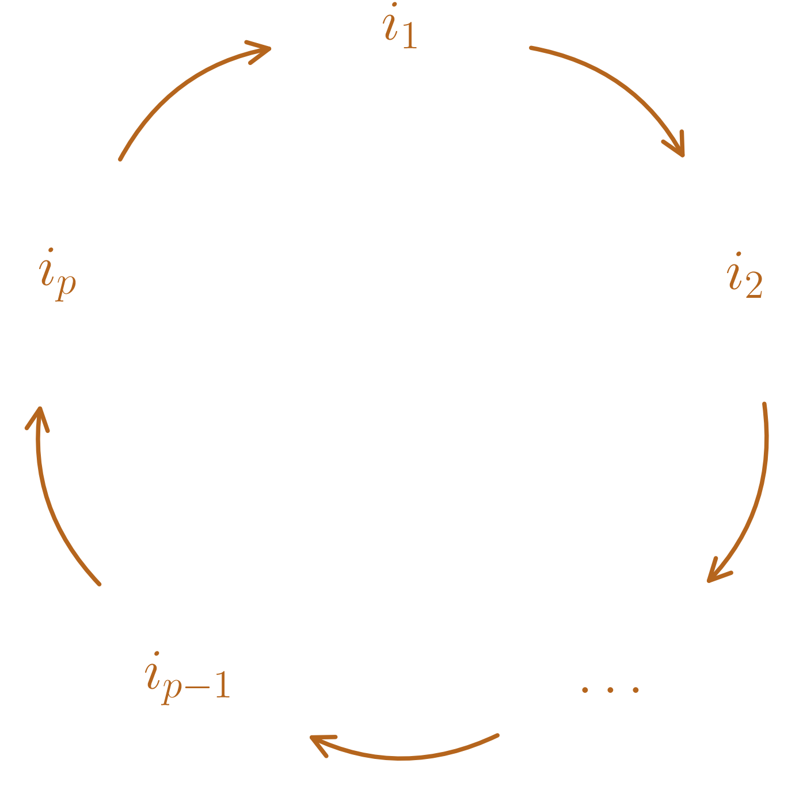

Soit \(n \in \mathbb{N}^{\star}\), le groupe symétrique de \([\![ 1,n ]\!]\) est le groupe des bijections de \([\![ 1,n ]\!]\) dans \([\![ 1,n ]\!]\), pour \(\circ\), noté \(\mathcal{S}_n\).
On a alors \(\mathcal{S}_n\) fini, de cardinal \(n!\) et une bijection de \([\![ 1,n ]\!]\) dans \([\![ 1,n ]\!]\) est appelée une permutation de \([\![ 1,n ]\!]\).
Soit \(\sigma \in \mathcal{S}_n\), \(\sigma\) peut être représenté par \(\begin{pmatrix} 1 & 2 & \ldots & n \\ \sigma(1) & \sigma(2) & \ldots & \sigma(n) \end{pmatrix}.\)
\[\mathcal{S}_3 = \left\{\begin{pmatrix} 1 & 2 & 3 \\ 1 & 2 & 3 \end{pmatrix},\begin{pmatrix} 1 & 2 & 3 \\ 2 & 1 & 3 \end{pmatrix},\begin{pmatrix} 1 & 2 & 3 \\ 3 & 2 & 1 \end{pmatrix},\begin{pmatrix} 1 & 2 & 3 \\ 1 & 3 & 2 \end{pmatrix},\begin{pmatrix} 1 & 2 & 3 \\ 3 & 1 & 2 \end{pmatrix},\begin{pmatrix} 1 & 2 & 3 \\ 2 & 3 & 1 \end{pmatrix}\right\}.\]
Soit \(\sigma \in \mathcal{S}_n\), pour \(k \in \mathbb{N}^{\star}\),
on note \(\sigma^k = \underbrace{\sigma \circ \ldots \circ \sigma}_{k \text{ facteurs}}\),
\(\sigma^{-k} = \underbrace{\sigma^{-1} \circ \ldots \circ \sigma^{-1}}_{k \text{ facteurs}}\),
et on a, par convention, \(\sigma^0 = \mathop{\mathrm{Id}}_{[\![ 1,n ]\!]}\),
pour \(\tau \in \mathcal{S}_n, \left(\sigma \circ \tau\right)^{-1} = \tau^{-1}\circ \sigma^{-1}\).
Soient \(A,B\) deux ensembles non vides et \(n \in \mathbb{N}^{\star}\).
\(f:A\to B\) est symétrique si \(\left\{\begin{array}{l} \forall (a_1,\ldots,a_n) \in A^n, \\ \forall \sigma \in \mathcal{S}_n, \end{array}\right. f(a_{\sigma(1)},\ldots,a_{\sigma(n)}) = f(a_1,\ldots,a_n).\)
Si \(n = 2\), \(f\) est symétrique \(\iff\) \(\forall (a_1,a_2) \in A^2, f(a_1,a_2) = f(a_2,a_1)\).
Soit \(\sigma \in \mathcal{S}_n\) avec \(n \geq 2\), \(\sigma\) est une transposition de \([\![ 1,n ]\!]\) s’il existe \(i,j \in [\![ 1,n ]\!]\) tels que \(i \neq j\) et \(\begin{array}{ll} \sigma(i) & = j \\ \sigma(j) & = i \\ \sigma(k) & = k, \quad \forall k \notin \left\{i,j\right\}. \end{array}\)
\(\sigma\), qui échange \(i\) et \(j\), est alors noté \(\sigma=\begin{pmatrix} i & j \end{pmatrix}\).
Pour \(n =3\), \(\begin{pmatrix} 1 & 2 & 3 \\ 2 & 1 & 3 \end{pmatrix}\) est une transposition.
Soit \(\sigma \in \mathcal{S}_n\) avec \(n \geq 2\), et \(p \in \mathbb{N}, \geq 2\), \(\sigma\) est un cycle (ou \(p\)-cycle) de \([\![ 1,n ]\!]\) s’il existe \(i_1,\ldots,i_p \in [\![ 1,n ]\!]\) distincts tels que
\(\begin{array}{ll} \sigma(i_1) & = i_2 \\ \sigma(i_2) & = i_3 \\ \vdots & \\ \sigma(i_{p-1}) & = i_{p} \\ \sigma(i_p) & = i_1 \\ \sigma(k) & = k, \quad \forall k \notin \left\{i_1,\ldots,i_p\right\}. \end{array}\)
\(\sigma\) est alors noté \(\sigma=\begin{pmatrix} i_1 & i_2 & \ldots & i_p \end{pmatrix}\).
\(\left\{i_1,\ldots,i_p\right\}\) est appelé le support de \(\sigma\).

Pour \(n=5\),
\(\begin{pmatrix} 1 & 2 & 3 & 4 & 5 \\ 3 & 2 & 4 & 1 & 5 \end{pmatrix}\) est le cycle \(\begin{pmatrix} 1 & 3 & 4 \end{pmatrix} = \begin{pmatrix} 3 & 4 & 1 \end{pmatrix} = \begin{pmatrix} 4 & 1 & 3 \end{pmatrix}\).
En revanche, \(\sigma = \begin{pmatrix} 1 & 2 & 3 & 4 & 5 \\ 2 & 4 & 5 & 1 & 3 \end{pmatrix}\) n’est pas un cycle.
On peut tout de même remarquer \(\begin{array}{ll} \sigma(1) & = 2 \\ \sigma(2) & = 4 \\ \sigma(4) & = 1 \end{array}\) et \(\begin{array}{ll} \sigma(3) & = 5 \\ \sigma(5) & = 3 \\ \end{array}\) donc \(\sigma = \begin{pmatrix} 1 & 2 & 4 \end{pmatrix}\circ \begin{pmatrix} 3 & 5 \end{pmatrix}.\)
Soient \(c_1,c_2 \in \mathcal{S}_n\) de supports \(A_1\) et \(A_2\) tels que \(A_1 \cap A_2 = \emptyset\).
Alors, \(c_1 \circ c_2 = c_2 \circ c_1\).
Soit \(i \in [\![ 1,n ]\!]\),
Si \(i \in A_1\),
\[\begin{aligned} \left(c_1 \circ c_2\right)(i) & = c_1(c_2(i)) \\ & = c_1(i) \text{ car $i \notin A_2$} \\ \text{ et }& \\ \left(c_2 \circ c_1\right)(i) & = c_2(c_1(i)) \\ & = c_1(i) \text{ car $c_1(i) \in A_1$ donc $c_1(i) \notin A_2$} \end{aligned}\] donc on a bien \(\left(c_1 \circ c_2\right)(i) = \left(c_2 \circ c_1\right)(i)\).
De même si \(i \in A_2\).
Si \(i \notin A_1, i \notin A_2\), \(\left(c_1 \circ c_2\right)(i) = c_1(c_2(i)) = c_1(i) = i = c_2(i) =\left(c_2 \circ c_1\right)(i)\).
(Décomposition d’une permutation en cycles disjoints) Soit \(\sigma \in \mathcal{S}_n\) avec \(n \geq 2\) tel que \(\sigma \neq \mathop{\mathrm{Id}}_{[\![ 1,n ]\!]}\).
Alors, il existe \(c_1,\ldots,c_s\) des cycles à supports disjoints tels que \(\sigma = c_1 \circ c_2 \circ \ldots \circ c_s\), et ces cycles sont uniques à l’ordre près (on peut échanger \(c_1\) et \(c_2\) par exemple).
On ne propose pas une preuve, qui est assez lourde à écrire, mais plutôt le traitement d’un exemple pour comprendre le théorème.
Regardons \(\sigma = \begin{pmatrix} 1 & 2 & 3 & 4 & 5 & 6 & 7 & 8 & 9 & 10 \\ 3 & 5 & 6 & 4 & 9 & 7 & 1 &10 & 2 & 8 \end{pmatrix}\).
Partant de \(1\), on a \(\begin{array}{ll} \sigma(1) & = 3 \\ \sigma(3) & = 6 \\ \sigma(6) & = 7 \\ \sigma(7) & = 1 \end{array}\), ce qui constitue un cycle \(\begin{pmatrix} 1 & 3 & 6 & 7 \end{pmatrix}\).
Ensuite, partons d’un éléments hors de \(\left\{1,3,6,7\right\}\), par exemple \(2\). On a alors \(\begin{array}{ll} \sigma(2) & = 5 \\ \sigma(5) & = 9 \\ \sigma(9) & = 2 \end{array}\), ce qui constitue un autre cycle \(\begin{pmatrix} 2 & 5 & 9 \end{pmatrix}\).
Partant de \(4\), on a \(\sigma(4) = 4\) donc \(4\) n’est dans aucun cycle.
Partant de de \(6\), on a \(\begin{array}{ll} \sigma(6) & = 7 \\ \sigma(7) & = 6 \end{array}\) et donc le cycle \(\begin{pmatrix} 6 & 7 \end{pmatrix}\).
Enfin, partant de de \(8\), on a \(\begin{array}{ll} \sigma(8) & = 10 \\ \sigma(10) & = 8 \end{array}\) et donc le cycle \(\begin{pmatrix} 8 & 10 \end{pmatrix}\).
Finalement, \(\sigma = \begin{pmatrix} 1 & 3 & 6 & 7 \end{pmatrix} \circ \begin{pmatrix} 2 & 5 & 9 \end{pmatrix} \circ \begin{pmatrix} 6 & 7 \end{pmatrix} \circ \begin{pmatrix} 8 & 10 \end{pmatrix}\).
(Décomposition d’une permutation en transpositions) Soit \(\sigma \in \mathcal{S}_n\) avec \(n \geq 2\).
Alors, il existe \(\tau_1,\ldots,\tau_r\) des transpositions de \([\![ 1,n ]\!]\) telles que \(\sigma = \tau_1 \circ \tau_2 \circ \ldots \circ \tau_r\).
Montrons ce résultat par récurrence sur \(n\).
Initialisation. Pour \(n=2\), \(\mathcal{S}_2 = \left\{\mathop{\mathrm{Id}}_{[\![ 1,2 ]\!]}, \begin{pmatrix} 1 & 2 \end{pmatrix}\right\}\).
\(\begin{pmatrix} 1 & 2 \end{pmatrix}\) est bien décomposé en une transposition,
Pour \(\mathop{\mathrm{Id}}_{[\![ 1,2 ]\!]}\), remarquons qu’une transposition \(\tau = \begin{pmatrix} i & j \end{pmatrix}\) vérifie \(\tau^{-1} = \tau\).
En effet,
pour \(k \notin \left\{i,j\right\}\),\(\tau\circ \tau(k) = k\) puis \(\tau\circ \tau(i) = \tau(j) = i\) et \(\tau\circ \tau(j) = \tau(i) = j\).
On a donc \(\mathop{\mathrm{Id}}_{[\![ 1,2 ]\!]} = \begin{pmatrix} 1 & 2 \end{pmatrix} \circ \begin{pmatrix} 1 & 2 \end{pmatrix}\).
Hérédité. Supposons le résultat vrai pour \(\mathcal{S}_n\) avec \(n \in \mathbb{N}^{\star}, \geq 2\) fixé.
Soit \(\sigma \in \mathcal{S}_{n+1}\),
Premier cas : Si \(\sigma(n+1) = n+1\), alors \(\sigma_{| [\![ 1,n ]\!]} \in \mathcal{S}_n\).
Par hypothèse de récurrence, il existe donc \(\tau_1,\ldots,\tau_r\) des transpositions de \([\![ 1,n ]\!]\) telles que \(\sigma_{| [\![ 1,n ]\!]} = \tau_1 \circ \tau_2 \circ \ldots \circ \tau_r\).
Or, ces transpositions de \([\![ 1,n ]\!]\) peuvent être vues aussi comme des transpositions de \([\![ 1,n+1]\!]\) (elles échangent des éléments de \([\![ 1,n ]\!]\) qui sont a fortiori dans \([\![ 1,n+1]\!]\)) et elles vérifient \(\tau_i(n+1) = n+1\) pour tout \(1 \leq i \leq r\).
On a donc pour \(k \in [\![ 1,n ]\!]\), \(\tau_1 \circ \tau_2 \circ \ldots \circ \tau_r (k) = \sigma_{| [\![ 1,n ]\!]}(k) = \sigma(k)\) et \(\tau_1 \circ \tau_2 \circ \ldots \circ \tau_r (n+1) = n+1= \sigma(n+1)\).
Donc \(\sigma = \tau_1 \circ \tau_2 \circ \ldots \circ \tau_r\).
Second cas : \(\sigma(n+1) = j\) avec \(j \neq n+1\).
On a alors avec \(\tau'_{1} = \begin{pmatrix} j & n+1 \end{pmatrix}\), \(\tau'_1\circ \sigma \in \mathcal{S}_{n+1}\) et \(\tau'_1 \circ \sigma(n+1) = \tau'_1(j) = n+1\).
Donc \(\tau'_1\circ \sigma\) rentre dans le premier cas et on a montré qu’il existe \(\tau_1,\ldots,\tau_r\) des transpositions de \([\![ 1,n+1]\!]\) telles que \(\tau'_1\circ \sigma = \tau_1 \circ \tau_2 \circ \ldots \circ \tau_r\).
Enfin, pour rappel, \(\left(\tau'_1\right)^{-1} = \tau'_1\) donc \(\sigma = \tau'_1 \circ \tau'_1\circ \sigma = \tau'_1 \circ \tau_1 \circ \tau_2 \circ \ldots \circ \tau_r\).
Soit \(\sigma = \begin{pmatrix} 1 & 2 & 3 & 4 & 5 \\ 3 & 4 & 5 & 2 & 1 \end{pmatrix} \in \mathcal{S}_5\).
On a \(\sigma(1) = 3\), alors travaillons avec \(\sigma_1 = \begin{pmatrix} 1 & 3 \end{pmatrix} \circ \sigma = \begin{pmatrix} 1 & 2 & 3 & 4 & 5 \\ 1 & 4 & 5 & 2 & 3 \end{pmatrix}\),
On a \(\sigma_1(2) = 4\), alors travaillons avec \(\sigma_2 = \begin{pmatrix} 2 & 4 \end{pmatrix} \circ \sigma_1 = \begin{pmatrix} 1 & 2 & 3 & 4 & 5 \\ 1 & 2 & 5 & 4 & 3 \end{pmatrix}\),
On a \(\sigma_2(3) = 5\), alors travaillons avec \(\sigma_3 = \begin{pmatrix} 3 & 5 \end{pmatrix} \circ \sigma_2 = \begin{pmatrix} 1 & 2 & 3 & 4 & 5 \\ 1 & 2 & 3 & 4 & 5 \end{pmatrix} = \mathop{\mathrm{Id}}\).
On a donc finalement
\(\sigma_3 = \begin{pmatrix} 3 & 5 \end{pmatrix} \circ \sigma_2 = \begin{pmatrix} 3 & 5 \end{pmatrix} \circ \begin{pmatrix} 2 & 4 \end{pmatrix} \circ \sigma_1 = \begin{pmatrix} 3 & 5 \end{pmatrix} \circ \begin{pmatrix} 2 & 4 \end{pmatrix} \circ \begin{pmatrix} 1 & 3 \end{pmatrix} \circ \sigma = \mathop{\mathrm{Id}}\).
Ce qui donne, \(\sigma = \left(\begin{pmatrix} 3 & 5 \end{pmatrix} \circ \begin{pmatrix} 2 & 4 \end{pmatrix} \circ \begin{pmatrix} 1 & 3 \end{pmatrix}\right)^{-1} = \begin{pmatrix} 1 & 3 \end{pmatrix}\circ\begin{pmatrix} 2 & 4 \end{pmatrix}\circ\begin{pmatrix} 3 & 5 \end{pmatrix}\).
Cette décomposition n’est pas unique, par exemple : \(\sigma = \begin{pmatrix} 1 & 5 \end{pmatrix}\circ\begin{pmatrix} 2 & 4 \end{pmatrix}\circ\begin{pmatrix} 1 & 3 \end{pmatrix}\)
(Admise) Soit \(\sigma \in \mathcal{S}_n\) avec \(n \geq 2\).
Alors, pour rappel, il existe \(\tau_1,\ldots,\tau_r\) des transpositions de \([\![ 1,n ]\!]\) telles que \(\sigma = \tau_1 \circ \tau_2 \circ \ldots \circ \tau_r\).
\(r\) n’est pas unique mais la parité de \(r\) est bien déterminée.
Autrement dit, toute autre décomposition de \(\sigma\) en transpositions admet un nombre de transposition de même parité que \(r\).
Soit \(\sigma \in \mathcal{S}_n\) avec \(n \geq 2\) telle que \(\sigma = \tau_1 \circ \tau_2 \circ \ldots \circ \tau_r\) avec \(\tau_1,\ldots,\tau_r\) des transpositions de \([\![ 1,n ]\!]\).
La signature de \(\sigma\), notée \(\varepsilon(\sigma)\), est \((-1)^r\) dont la valeur ne dépend pas de la décomposition en transpositions d’après la proposition [prop:parité_nb_transpos_decompo].
Si \(\varepsilon(\sigma) = 1\), la permutation est dite paire et si \(\varepsilon(\sigma) = -1\), la permutation est dite impaire.
Par convention, pour \(n=1\), on pose \(\varepsilon\left(\mathop{\mathrm{Id}}_{\left\{1\right\}}\right) = 1\).
Si \(\tau\) est une transposition, \(\varepsilon(\tau) = -1\).
D’autre part, \(\varepsilon\left(\mathop{\mathrm{Id}}_{[\![ 1,n ]\!]}\right) = 1\) car \(\mathop{\mathrm{Id}}_{[\![ 1,n ]\!]} = \begin{pmatrix} 1 & 2 \end{pmatrix} \circ \begin{pmatrix} 1 & 2 \end{pmatrix}.\)
Soient \(\sigma, \sigma' \in \mathcal{S}_n\) alors, \(\varepsilon\left(\sigma \circ \sigma'\right) = \varepsilon\left(\sigma\right)\varepsilon\left(\sigma'\right)\).
Autrement dit, \(\varepsilon : \left(\mathcal{S}_n,\circ\right) \mapsto \left(\left\{0,1\right\},\times\right)\) est un morphisme de groupes.
Si \(\sigma = \tau_1 \circ \ldots \circ \tau_r\) et \(\sigma' = \tau'_1 \circ \ldots \circ \tau'_s\) avec \(\tau_1,\ldots,\tau_r,\tau'_1,\ldots,\tau'_s\) transpositions de \([\![ 1,n ]\!]\).
Alors, \(\sigma \circ \sigma' = \tau_1 \circ \ldots \circ \tau_r\circ \tau'_1 \circ \ldots \circ \tau'_s\) donc \(\varepsilon\left(\sigma \circ \sigma'\right) = (-1)^{r+s} = (-1)^r(-1)^s=\varepsilon\left(\sigma\right)\varepsilon\left(\sigma'\right)\).
Soit \(\sigma \in \mathcal{S}_n\) alors, \(\varepsilon\left(\sigma^{-1}\right) = \varepsilon\left(\sigma\right)\).
Si \(\sigma = \tau_1 \circ \ldots \circ \tau_r\) avec \(\tau_1,\ldots,\tau_r\) transpositions de \([\![ 1,n ]\!]\).
Alors, \(\sigma^{-1} = \tau_r^{-1} \circ \ldots \circ \tau_1^{-1} = \tau_r \circ \ldots \circ \tau_1\) donc \(\varepsilon\left(\sigma^{-1}\right) = (-1)^r=\varepsilon\left(\sigma\right)\).
Soit \(n \in \mathbb{N}^{\star}\), \(\mathcal{A}_n= \left\{\sigma \in \mathcal{S}_n/ \varepsilon(\sigma)=1\right\}\) est appelé le groupe alterné de \([\![ 1,n ]\!]\).
Montrons que \(\mathcal{A}_n\) est effectivement un groupe en montrant que c’est un sous-groupe de \(\mathcal{S}_n\).
\(\mathop{\mathrm{Id}}_{[\![ 1,n ]\!]} \in \mathcal{A}_n\) car \(\varepsilon\left(\mathop{\mathrm{Id}}_{[\![ 1,n ]\!]}\right)=1\),
Soient \(\sigma,\sigma' \in \mathcal{A}_n\), alors \(\varepsilon(\sigma) = \varepsilon(\sigma') = 1\)
et \(\varepsilon\left(\sigma \circ \sigma'\right) = \varepsilon\left(\sigma\right)\varepsilon\left(\sigma'\right) = 1\) donc \(\sigma \circ \sigma' \in \mathcal{A}_n\).
Si \(\sigma,\sigma' \in \mathcal{S}_n\setminus \mathcal{A}_n\), \(\sigma\circ \sigma' \in \mathcal{A}_n\) car \(\varepsilon\left(\sigma \circ \sigma'\right) = \varepsilon\left(\sigma\right)\varepsilon\left(\sigma'\right) = (-1)^2 = 1\).
Soit \(n \in \mathbb{N}, \geq 2\) alors \(\mathop{\mathrm{card}}\mathcal{A}_n= \frac{n!}{2}\).
Soit \(\tau\) une transposition de \([\![ 1,n ]\!]\), montrons que \(\begin{array}{lllll} f & : & \mathcal{A}_n & \to & \mathcal{S}_n\setminus \mathcal{A}_n \\ & & \sigma & \mapsto & \tau \circ \sigma \end{array}\) est une bijection.
D’abord, \(f\) est surjective, ie on a \(\mathop{\mathrm{Im}}f =\mathcal{S}_n\setminus \mathcal{A}_n\).
En effet, \(\mathop{\mathrm{Im}}f \subset\mathcal{S}_n\setminus \mathcal{A}_n\) car si \(\sigma \in \mathcal{A}_n\), \(\varepsilon(\tau \circ \sigma) = \varepsilon(\tau)\varepsilon(\sigma) = -1\).
D’autre part, \(\mathop{\mathrm{Im}}f \supset \mathcal{S}_n\setminus \mathcal{A}_n\) car si \(\sigma' \in \mathcal{S}_n\setminus \mathcal{A}_n\), \(\tau \circ \sigma' \in \mathcal{A}_n\) car \(\varepsilon(\tau \circ \sigma') = \varepsilon(\tau)\varepsilon(\sigma') = 1\)
et on a \(f(\tau \circ \sigma) = \tau \circ \tau \circ \sigma' = \sigma'\).
Ensuite, \(f\) est injective car soient \(\sigma,\sigma' \in \mathcal{A}_n\),
\(f(\sigma) = f(\sigma') \iff \tau \circ \sigma = \tau \circ \sigma' \iff \tau \circ\tau \circ \sigma = \tau \circ\tau \circ \sigma' \iff \sigma=\sigma'\).
On en déduit \(\mathop{\mathrm{card}}\mathcal{A}_n= \mathop{\mathrm{card}}\mathcal{S}_n\setminus \mathcal{A}_n\).
Or, \(\mathcal{S}_n= \mathcal{A}_n\cup \mathcal{S}_n\setminus \mathcal{A}_n\) et cette union est disjointe.
Donc \(n! = \mathop{\mathrm{card}}\mathcal{S}_n= \mathop{\mathrm{card}}\mathcal{A}_n+ \mathop{\mathrm{card}}\mathcal{S}_n\setminus \mathcal{A}_n= 2\mathop{\mathrm{card}}\mathcal{A}_n\) et \(\mathop{\mathrm{card}}\mathcal{A}_n= \frac{n!}{2}\).
Par exemple, \(\mathcal{A}_3 = \left\{\mathop{\mathrm{Id}}_{[\![ 1,3 ]\!]}, \begin{pmatrix} 1 & 2 & 3 \\ 3 & 1 & 2 \end{pmatrix},\begin{pmatrix} 1 & 2 & 3 \\ 2 & 3 & 1 \end{pmatrix}\right\}\) est de cardinal \(3 = \frac{3!}{2}\).
Soit \(E\) un \(\mathbb{K}\)-espace vectoriel (avec \(\mathbb{K}\) sous-corps de \(\mathbb{C}\)) et \(n \in \mathbb{N}^{\star}\).
Soit \(\begin{array}{lllll} \varphi & : & E^n & \to & \mathbb{K} \\ & & (x_1,\ldots,x_n) & \mapsto & \varphi(x_1,\ldots,x_n) \end{array}\),
\(\varphi\) est une forme \(n\)-linéaire si \(\varphi\) est linéaire par rapport à chacune des \(n\) variables, c’est-à-dire, pour tout \((v_1,\ldots,v_n) \in E^n\), pour tout \(1 \leq i \leq n\), \(\begin{array}{lllll} \varphi_i & : & E & \to & \mathbb{K} \\ & & x & \mapsto & \varphi(v_1,\ldots,v_{i-1},x,v_{i+1},\ldots,v_n) \end{array}\) est linéaire.
Autrement dit, pour tout \((v_1,\ldots,v_n) \in E^n\), \(u,v \in E\) et \(\lambda \in \mathbb{K}\), on a pour tout \(1 \leq i \leq n\), \[\varphi(v_1,\ldots,v_{i-1},u+\lambda v,v_{i+1},\ldots,v_n) = \varphi(v_1,\ldots,v_{i-1},u,v_{i+1},\ldots,v_n)+\lambda \varphi(v_1,\ldots,v_{i-1},v,v_{i+1},\ldots,v_n).\]
On a par exemple, \(\varphi(\lambda v_1,\ldots,\lambda v_n) = \lambda^n \varphi(v_1,\ldots,v_n)\).
Soit \(E\) un \(\mathbb{K}\)-espace vectoriel (avec \(\mathbb{K}\) sous-corps de \(\mathbb{C}\)) et \(n \in \mathbb{N}^{\star}\).
Soit \(\begin{array}{lllll} \varphi & : & E^n & \to & \mathbb{K} \\ & & (x_1,\ldots,x_n) & \mapsto & \varphi(x_1,\ldots,x_n) \end{array}\),
\(\varphi\) est une forme alternée si \(\varphi(x_1,\ldots,x_n)=0\) dès qu’il existe \(i,j \in [\![ 1,n ]\!]\) tels que \(i \neq j\) et \(x_i=x_j\).
On note \(\mathcal{A}_n(E,\mathbb{K})\) l’ensemble des formes \(n\)-linéaires alternées sur \(E^n\).
Soit \(\varphi \in \mathcal{A}_n(E,\mathbb{K})\), alors \(\varphi\) est antisymétrique, c’est-à-dire, pour tout \((v_1,\ldots,v_n) \in E^n\) et \(\sigma \in \mathcal{S}_n\), \[\varphi(v_{\sigma(1)},\ldots,v_{\sigma(n)}) = \varepsilon(\sigma) \varphi(v_1,\ldots,v_n).\]
Premier cas. \(\sigma\) est une transposition \(\begin{pmatrix} i & j \end{pmatrix}\).
On cherche à montrer \[\varphi(v_1,\ldots,v_{i-1},\underbrace{v_j}_{\substack{i\text{-ième} \\ \text{position}}},v_{i+1},\ldots,v_{j-1},\underbrace{v_i}_{\substack{j\text{-ième} \\ \text{position}}},v_{j+1},\ldots,v_{n}) = - \varphi(v_1,\ldots,v_n).\]
Posons \(\alpha = \varphi(v_1,\ldots,\underbrace{v_i+v_j}_{\substack{i\text{-ième} \\ \text{position}}},\ldots,\underbrace{v_i+v_j}_{\substack{j\text{-ième} \\ \text{position}}},\ldots,v_{n})\).
D’abord, \(\alpha = 0\) car \(\varphi\) est alternée.
Ensuite, \[\begin{aligned} \alpha = & \text{ }\varphi(v_1,\ldots,{v_i},\ldots,{v_i+v_j},\ldots,v_{n}) \\ & +\varphi(v_1,\ldots,{v_j},\ldots,{v_i+v_j},\ldots,v_{n}) \\ &\qquad\qquad \text{ par linéarité par rapport à la $i$-ème composante} \\ = & \text{ }\varphi(v_1,\ldots,{v_i},\ldots,{v_i},\ldots,v_{n}) \\ &+\varphi(v_1,\ldots,{v_i},\ldots,{v_j},\ldots,v_{n}) \\ & +\varphi(v_1,\ldots,{v_j},\ldots,{v_i},\ldots,v_{n}) \\ & +\varphi(v_1,\ldots,{v_j},\ldots,{v_j},\ldots,v_{n}) \\ &\qquad\qquad \text{ par linéarité par rapport à la $j$-ème composante} \\ = & \text{ }0 \\ &+\varphi(v_1,\ldots,{v_i},\ldots,{v_j},\ldots,v_{n}) \\ & +\varphi(v_1,\ldots,{v_j},\ldots,{v_i},\ldots,v_{n}) \\ & +0\\ &\qquad\qquad \text{ car $\varphi$ est alternée.} \\ \end{aligned}\]
Donc \[\begin{aligned} &0 = \varphi(v_1,\ldots,{v_i},\ldots,{v_j},\ldots,v_{n})+\varphi(v_1,\ldots,{v_j},\ldots,{v_i},\ldots,v_{n}) \\ &\iff \varphi(v_1,\ldots,{v_j},\ldots,{v_i},\ldots,v_{n})=-\varphi(v_1,\ldots,{v_i},\ldots,{v_j},\ldots,v_{n}) \end{aligned}\]
Second cas. Retour au cas \(\sigma \in \mathcal{S}_n\) général. Il existe \(\tau_1,\ldots,\tau_r\) des transpositions de \([\![ 1,n ]\!]\) telles que \(\sigma = \tau_1 \circ \tau_2 \circ \ldots \circ \tau_r\).
Donc \[\begin{aligned} \varphi(v_{\sigma(1)},\ldots,v_{\sigma(n)}) & = \varphi(v_{\tau_1 \circ \tau_2 \circ \ldots \circ \tau_r(1)},\ldots,v_{\tau_1 \circ \tau_2 \circ \ldots \circ \tau_r(n)}) \\ & = -\varphi(v_{\tau_2\circ \ldots \circ \tau_r(1)},\ldots,v_{\tau_2 \circ \ldots \circ \tau_r(n)}) \text{ par le premier cas} \\ & = (-1)^2\varphi(v_{\tau_3 \circ \ldots \circ \tau_r(1)},\ldots,v_{\tau_3 \circ \ldots \circ \tau_r(n)}) \text{ par le premier cas} \\ & \vdots \\ & = (-1)^r\varphi(v_1,\ldots,v_n) \text{ par le premier cas} \\ & = \varepsilon(\sigma) \varphi(v_1,\ldots,v_n). \end{aligned}\]
Par exemple, si \(n=2\), pour tout \((v_1,v_2) \in E^2\), \(\varphi(v_2,v_1) = -\varphi(v_1,v_2)\).
Soit \(\varphi \in \mathcal{A}_n(E,\mathbb{K}\)), si \((v_1,\ldots,v_n) \in E^n\) est liée alors \(\varphi(v_1,\ldots,v_n) = 0\).
Comme \((v_1,\ldots,v_n)\) est liée, il existe \(k \in [\![ 1,n ]\!]\) et \(\alpha_1,\ldots,\alpha_n \in \mathbb{K}\) tels que \(v_k = \sum_{\ell \neq k} \alpha_\ell v_\ell\).
On a donc \[\begin{aligned} \varphi(v_1,\ldots,v_k,\ldots,v_n) & =\sum_{\ell \neq k}\alpha_\ell \varphi(v_1,\ldots,v_\ell,\ldots,v_n) \text{ par linéarité par rapport à la $k$-ième composante} \\ & = \sum\alpha_\ell 0 \text{ car $\varphi$ est alternée.} \\ & = 0. \end{aligned}\]
Soient \(\varphi \in \mathcal{A}_n(E,\mathbb{K}\)), \((v_1,\ldots,v_n) \in E^n\) et \(\alpha_1,\ldots,\alpha_n \in \mathbb{K}\). Alors, soit \(k \in [\![ 1,n ]\!]\),
\[\varphi(v_1,\ldots,v_k + \sum_{\ell \neq k}\alpha_\ell v_\ell,\ldots,v_n) = \varphi(v_1,\ldots,v_n).\]
\[\begin{aligned} \varphi(v_1,\ldots,v_k + \sum_{\ell \neq k}\alpha_\ell v_\ell,\ldots,v_n) & =\varphi(v_1,\ldots,v_n)+\sum\alpha_\ell\varphi(v_1,\ldots,v_\ell,\ldots,v_n) \\ & \qquad\qquad \text{ par linéarité par rapport à la $k$-ième composante} \\ & = \varphi(v_1,\ldots,v_n)+\sum\alpha_\ell 0 \text{ car $\varphi$ est alternée.} \\ & =\varphi(v_1,\ldots,v_n). \end{aligned}\]
\(\mathcal{A}_n(E,\mathbb{K})\) est un \(\mathbb{K}\)-espace vectoriel.
Montrons que \(\mathcal{A}_n(E,\mathbb{K})\) est un sous-espace vectoriel de \(\mathscr{F}(E^n,\mathbb{K})\).
\(0_{\mathscr{F}(E^n,\mathbb{K})} \in \mathcal{A}_n(E,\mathbb{K})\).
Soient \(\varphi,\psi \in \mathcal{A}_n(E,\mathbb{K})\) et \(\alpha \in \mathbb{K}\).
Alors,
\(\varphi+\alpha\psi\) est \(n\)-linéaire car pour tout \((v_1,\ldots,v_n) \in E^n\), pour tout \(1 \leq i \leq n\), \(\begin{array}{lllll} (\varphi+\alpha\psi)_i & : & E & \to & \mathbb{K} \\ & & x & \mapsto & \varphi(v_1,\ldots,v_{i-1},x,v_{i+1},\ldots,v_n)+\alpha\psi(v_1,\ldots,v_{i-1},x,v_{i+1},\ldots,v_n) \end{array}\) est linéaire comme combinaison linéaire de fonctions linéaires.
\(\varphi+\alpha\psi\) est alternée car soient \((v_1,\ldots,v_n) \in E^n\) et \(i,j \in [\![ 1,n ]\!]\) tels que \(i \neq j\) et \(v_i = v_j\),
\(\left(\varphi+\alpha\psi\right)(v_1,\ldots,v_n) = \varphi(v_1,\ldots,v_n)+\alpha\psi(v_1,\ldots,v_n) = 0+\alpha\times 0 = 0\).
Donc \(\varphi+\alpha\psi \in \mathcal{A}_n(E,\mathbb{K})\).
On suppose \(E\) de dimension \(n\).
Soit \(\mathscr{B}= (e_1,\ldots,e_n)\) une base de \(E\), \(\varphi \in \mathcal{A}_n(E,\mathbb{K})\) et \((v_1,\ldots,v_n) \in E^n\). Alors, soient \((a_{ij})_{1 \leq i,j \leq n} \in \mathbb{K}^{n^2}\) tels que pour \(j \in [\![ 1,n ]\!], v_j = \sum_{i=1}^n a_{ij} e_i\),
\[\varphi(v_1,\ldots,v_n) = \left(\sum_{\sigma \in \mathcal{S}_n} \varepsilon(\sigma) a_{\sigma(1) 1}a_{\sigma(2) 2} \ldots a_{\sigma(n)n} \right)\varphi(e_1,\ldots,e_n)\]
On écrit la preuve dans le cas \(n=3\), qui s’adapte parfaitement à des \(n\) plus grand. On a \[\begin{aligned} \varphi(v_1,v_2,v_3) & = \varphi\left(\sum_{i=1}^3 a_{i1} e_{i_1},v_2,v_3\right) \\ & = \sum_{i=1}^3 a_{i1} \varphi\left(e_{i},v_2,v_3\right)\text{ par linéarité par rapport à la 1-ère variable} \\ & = \sum_{i=1}^3 a_{i1} \varphi\left(e_{i},\sum_{j=1}^3 a_{j2} e_{j},v_3\right) \\ & = \sum_{i=1}^3 a_{i1}\sum_{j=1}^3 a_{j2} \varphi\left(e_{i},e_{j},v_3\right)\text{ par linéarité par rapport à la 2-ème variable} \\ & = \sum_{i_1=1}^3 a_{i1}\sum_{j=1}^3 a_{j2} \varphi\left(e_{i},e_{j},\sum_{k=1}^3 a_{k3}e_{k} \right) \\ & = \sum_{i=1}^3 a_{i1}\sum_{j=1}^3 a_{j2}\sum_{k=1}^3 a_{k3} \varphi\left(e_{i},e_{j},e_{k}\right)\text{ par linéarité par rapport à la 3-ème variable} \\ & = \sum_{i=1}^3 \sum_{j=1}^3\sum_{k=1}^3 a_{i1}a_{j2}a_{k3} \varphi\left(e_{i},e_{j},e_{k}\right). \end{aligned}\]
Or, choisir \((i,j,k) \in [\![ 1,3 ]\!]^2\) dans la somme précédente revient à considérer une fonction \(f:\begin{array}{rl} [\![ 1, 3]\!] & \to [\![ 1, 3 ]\!] \\ 1 & \mapsto i \\ 2 & \mapsto j \\ 3 & \mapsto k \end{array}\)
donc en notant \(\mathscr{F}_3 = \mathscr{F}([\![ 1, 3]\!],[\![ 1, 3]\!])\), \(\varphi(v_1,v_2,v_3) = \sum_{f \in \mathscr{F}_3} a_{f(1)1}a_{f(2)2}a_{f(3)3} \varphi\left(e_{f(1)},e_{f(2)},e_{f(3)}\right).\)
De plus, \(\varphi\) est non alternée donc quand \(f\) est non injective, \(\varphi\left(e_{f(1)},e_{f(2)},e_{f(3)}\right) = 0\).
Donc, en retirant les termes nuls il ne reste plus que les fonctions injectives dans la somme.
Comme, \(f : [\![ 1, 3]\!] \to [\![ 1, 3 ]\!]\), \(f\) injectve \(\iff\) \(f\) bijective donc il ne reste que les bijections donc les permutations de \(\mathcal{S}_3\) et \(\varphi(v_1,v_2,v_3) = \sum_{\sigma \in \mathcal{S}_3} a_{\sigma(1)1}a_{\sigma(2)2}a_{\sigma(3)3} \varphi\left(e_{\sigma(1)},e_{\sigma(2)},e_{\sigma(3)}\right).\)
Enfin, \(\varphi \in \mathcal{A}_3(E,\mathbb{K})\) donc \(\varphi\) est antisymétrique donc \(\varphi\left(e_{\sigma(1)},e_{\sigma(2)},e_{\sigma(3)}\right) = \varepsilon(\sigma) \varphi(e_1,e_2,e_3)\) et \[\varphi(v_1,v_2,v_3) = \sum_{\sigma \in \mathcal{S}_3} a_{\sigma(1)1}a_{\sigma(2)2}a_{\sigma(3)3} \varepsilon(\sigma) \varphi(e_1,e_2,e_3).\]
Soit \(E\) un espace vectoriel de dimension \(n\) et \(\mathscr{B}= (e_1,\ldots,e_n)\) une base de \(E\).
Alors, il existe \(\varphi_\mathscr{B}\in \mathcal{A}_n(E,\mathbb{K})\) unique telle que \(\varphi_\mathscr{B}(e_1,\ldots,e_n) = 1\).
(Analyse) Si \(\varphi_\mathscr{B}\) existe alors pour tout \((v_1,\ldots,v_n) \in E^n\) tel que que pour \(j \in [\![ 1,n ]\!], v_j = \sum_{i=1}^n a_{ij} e_i\), \[\varphi_\mathscr{B}(v_1,\ldots,v_n)=\sum_{\sigma \in \mathcal{S}_n} \varepsilon(\sigma) a_{\sigma(1) 1}a_{\sigma(2) 2} \ldots a_{\sigma(n)n}\] par la proposition [prop:deter_grosse_somme].
(Synthèse) Montrons que
\[\begin{array}{lllll} \varphi_\mathscr{B} & : & E^n & \to & \mathbb{K} \\ & & (v_1,\ldots,v_n) & \mapsto & \sum_{\sigma \in \mathcal{S}_n} \varepsilon(\sigma) a_{\sigma(1) 1}a_{\sigma(2) 2} \ldots a_{\sigma(n)n} \text{ avec }v_j = \sum_{i=1}^n a_{ij} e_i \text{ pour $j \in [\![ 1,n ]\!]$} \end{array}\]
vérifie bien \(\varphi_\mathscr{B}(e_1,\ldots,e_n) = 1\) et \(\varphi_\mathscr{B}\in \mathcal{A}_n(E,\mathbb{K})\).
D’abord, \(\varphi_\mathscr{B}(e_1,\ldots,e_n) = 1\).
En effet, pour \(j \in [\![ 1,n ]\!]\), \(e_j = 1e_j + \sum_{i\neq j} 0e_i\) ie \(a_{jj} = 1\) et \(a_{ij} = 0\) pour \(i \neq j\).
De plus, si \(\sigma \in \mathcal{S}_n\) et \(\sigma \neq \mathop{\mathrm{Id}}\), il existe \(i \neq j\) tels que \(\sigma(j) = i\)
donc \(a_{\sigma(1) 1}a_{\sigma(2) 2} \ldots \underbrace{a_{\sigma(i)j}}_{=0} \ldots a_{\sigma(n)n} = 0\).
On a donc bien
\[\varphi_\mathscr{B}(e_1,\ldots,e_n)=\sum_{\sigma \in \mathcal{S}_n} \varepsilon(\sigma) a_{\sigma(1) 1}a_{\sigma(2) 2} \ldots a_{\sigma(n)n} = \underbrace{a_{11}a_{22}\ldots a_{nn}}_{\text{terme pour $\sigma = \mathop{\mathrm{Id}}$}} = 1.\]
\(\varphi_\mathscr{B}\) est \(n\)-linéaire. En effet, soient \((v_1,\ldots,v_n) \in E^n\), \((v'_1,\ldots,v'_n) \in E^n\) et \(\lambda \in \mathbb{K}\).
Soient \((a_{ij})_{1 \leq i,j \leq n},(a'_{ij})_{1 \leq i,j \leq n} \in \mathbb{K}^{n^2}\) tels que pour \(j \in [\![ 1,n ]\!], v_j = \sum_{i=1}^n a_{ij} e_i\) et \(v'_j = \sum_{i=1}^n a'_{ij} e_i\).
Alors, pour \(j \in [\![ 1,n ]\!]\),
\[\begin{aligned} &\varphi_\mathscr{B}(v_1,\ldots,v_j+\lambda v'_j,\ldots,v_n) \\ = & \sum_{\sigma \in \mathcal{S}_n} \varepsilon(\sigma) a_{\sigma(1) 1}\ldots (a_{\sigma(j)j} +\lambda a'_{\sigma(j)j} )\ldots a_{\sigma(n)n} \\ = & \sum_{\sigma \in \mathcal{S}_n} \varepsilon(\sigma) a_{\sigma(1) 1}\ldots a_{\sigma(j)j}\ldots a_{\sigma(n)n} + \lambda \sum_{\sigma \in \mathcal{S}_n} \varepsilon(\sigma) a_{\sigma(1) 1}\ldots a'_{\sigma(j)j} \ldots a_{\sigma(n)n} \\ = &\varphi_\mathscr{B}(v_1,\ldots,v_j,\ldots,v_n)+\lambda \varphi_\mathscr{B}(v_1,\ldots, v'_j,\ldots,v_n). \end{aligned}\]
\(\varphi_\mathscr{B}\) est alternée. En effet, soient \((v_1,\ldots,v_n) \in E^n\) tel que \(v_k = v_\ell\) pour \(k \neq \ell\).
Soient \((a_{ij})_{1 \leq i,j \leq n}\) tels que pour \(j \in [\![ 1,n ]\!], v_j = \sum_{i=1}^n a_{ij} e_i\).
Comme \(v_k = v_\ell\), on a \(a_{ik} = a_{i\ell}\) pour tout \(i \in [\![ 1,n ]\!]\).
Alors, remarquons que pour \(\sigma \in \mathcal{S}_n\), et \(\tau = \begin{pmatrix} k & \ell \end{pmatrix}\),
\[\begin{aligned} \varepsilon(\sigma \circ \tau ) a_{\left(\sigma \circ \tau\right)(1) 1}\ldots a_{\left(\sigma \circ \tau\right)(k) k} \ldots a_{\left(\sigma \circ \tau\right)(\ell) \ell} \ldots a_{\left(\sigma \circ \tau\right)(n) n} & = -\varepsilon(\sigma) a_{\sigma(1) 1}\ldots a_{\sigma(\ell)k} \ldots a_{\sigma(k) \ell} \ldots a_{\sigma(n) n}. \end{aligned}\] Or, \(a_{\sigma(\ell)k} = a_{\sigma(\ell)\ell}\) et \(a_{\sigma(k)\ell} = a_{\sigma(k)k}\) donc \[\begin{aligned} \varepsilon(\sigma \circ \tau ) a_{\left(\sigma \circ \tau\right)(1) 1}\ldots a_{\left(\sigma \circ \tau\right)(k) k} \ldots a_{\left(\sigma \circ \tau\right)(\ell) \ell} \ldots a_{\left(\sigma \circ \tau\right)(n) n} & = -\varepsilon(\sigma) a_{\sigma(1) 1}\ldots a_{\sigma(k)k} \ldots a_{\sigma(\ell) \ell} \ldots a_{\sigma(n) n}. \end{aligned}\]
De plus, comme utilisé dans la preuve de la proposition [prop:cardinal_A_n], \(\begin{array}{lllll} f & : & \mathcal{A}_n & \to & \mathcal{S}_n\setminus \mathcal{A}_n \\ & & \sigma & \mapsto & \tau \circ \sigma \end{array}\) est une bijection.
On a donc \[\begin{aligned} \varphi_\mathscr{B}(v_1,\ldots,v_n) & = \sum_{\sigma \in \mathcal{S}_n} \varepsilon(\sigma) a_{\sigma(1) 1}a_{\sigma(2) 2} \ldots a_{\sigma(n)n} \\ & = \sum_{\sigma \in \mathcal{A}_n} \varepsilon(\sigma) a_{\sigma(1) 1}a_{\sigma(2) 2} \ldots a_{\sigma(n)n}+\sum_{\sigma \in \mathcal{A}_n} \varepsilon(\tau \circ \sigma) a_{\left(\tau \circ \sigma\right)(1) 1}a_{\left(\tau \circ \sigma\right)(2) 2} \ldots a_{\left(\tau \circ \sigma\right)(n)n} \\ & = \sum_{\sigma \in \mathcal{A}_n} \varepsilon(\sigma) a_{\sigma(1) 1}a_{\sigma(2) 2} \ldots a_{\sigma(n)n}-\sum_{\sigma \in \mathcal{A}_n} \varepsilon(\sigma) a_{\sigma(1) 1}a_{\sigma(2) 2} \ldots a_{\sigma(n)n} \\ & = 0. \end{aligned}\]
Soit \(E\) un espace vectoriel de dimension \(n\), \(\mathscr{B}= (e_1,\ldots,e_n)\) une base de \(E\) et \(\varphi_\mathscr{B}\in \mathcal{A}_n(E,\mathbb{K})\) définie dans la proposition [prop:def_varphi_B].
Alors, \((\varphi_\mathscr{B})\) est une base de \(\mathcal{A}_n(E,\mathbb{K})\) (et est donc de dimension 1).
D’abord, \((\varphi_\mathscr{B})\) est libre car \(\varphi_\mathscr{B}\neq 0\) car \(\varphi_\mathscr{B}(e_1,\ldots,e_n) = 1\).
Ensuite, \((\varphi_\mathscr{B})\) est génératrice car soit \(\psi \in \mathcal{A}_n(E,\mathbb{K})\), par la proposition [prop:deter_grosse_somme], pour tout \((v_1,\ldots,v_n) \in E^n\), tel que que pour \(j \in [\![ 1,n ]\!], v_j = \sum_{i=1}^n a_{ij} e_i\), \[\begin{aligned} \psi(v_1,\ldots,v_n) &= \underbrace{\sum_{\sigma \in \mathcal{S}_n} \varepsilon(\sigma) a_{\sigma(1) 1}a_{\sigma(2) 2} \ldots a_{\sigma(n)n} }_{= \varphi_\mathscr{B}(v_1,\ldots,v_n)} \psi(e_1,\ldots,e_n) \\ & = \lambda \varphi_\mathscr{B}(v_1,\ldots,v_n) \end{aligned}\] avec \(\lambda = \psi(e_1,\ldots,e_n)\).
Soit \(E\) un espace vectoriel de dimension \(n\), \(\mathscr{B}= (e_1,\ldots,e_n)\) une base de \(E\) et \(\varphi_\mathscr{B}\in \mathcal{A}_n(E,\mathbb{K})\) définie dans la proposition [prop:def_varphi_B]. Soit \((v_1,\ldots,v_n) \in E^n\)
Alors, \(\varphi_\mathscr{B}(v_1,\ldots,v_n)\) est appelé le déterminant de \((v_1,\ldots,v_n)\) dans \(\mathscr{B}\) et est noté \({\det}_\mathscr{B}\). \(\varphi_\mathscr{B}\) est alor noté \({\det}_\mathscr{B}\).
On a donc, pour rappel, \[\begin{array}{lllll} {\det}_\mathscr{B} & : & E^n & \to & \mathbb{K} \\ & & (v_1,\ldots,v_n) & \mapsto & \sum_{\sigma \in \mathcal{S}_n} \varepsilon(\sigma) a_{\sigma(1) 1}a_{\sigma(2) 2} \ldots a_{\sigma(n)n} \text{ avec }v_j = \sum_{i=1}^n a_{ij} e_i \text{ pour $j \in [\![ 1,n ]\!]$} \end{array}\]
Si \(n=2\), \(\mathscr{B}=(e_1,e_2)\) et \(v_1 = ae_1+be_2, v_2 = ce_1+de_2\) avec \(a,b,c,d \in \mathbb{K}\), on a pour rappel \(\mathcal{S}_2 = \left\{\mathop{\mathrm{Id}},\tau = \begin{pmatrix} 1 & 2 \end{pmatrix}\right\}\) et \[{\det}_\mathscr{B}(v_1,v_2) = \underbrace{\underbrace{a}_{=a_{11}}\underbrace{d}_{=a_{22}}}_{\text{terme de $\mathop{\mathrm{Id}}$}}-\underbrace{\underbrace{b}_{=a_{21}}\underbrace{c}_{=a_{12}}}_{\text{terme de $\tau$}}.\]
Soient \(E\) un espace vectoriel de dimension \(n\) et \(\mathscr{B}\) une base de \(E\). Les propriétés suivantes proviennent directement du fait que \({\det}_\mathscr{B}\in \mathcal{A}_n(E,\mathbb{K})\) et ont déjà été démontrées. Pour tout \((v_1,\ldots,v_n)\in E^n\),
\({\det}_\mathscr{B}(v_1,\ldots,v_n)\) dépend linéairement de chaque \(v_i\),
Si \((v_1,\ldots,v_n)\) est liée, \({\det}_\mathscr{B}(v_1,\ldots,v_n) = 0\),
Pour tout \(\sigma \in \mathcal{S}_n\), \({\det}_\mathscr{B}(v_{\sigma(1)},\ldots,\sigma(n)) = \varepsilon(\sigma){\det}_\mathscr{B}(v_1,\ldots,v_n)\).
Soient \(\alpha_1,\ldots,\alpha_n \in \mathbb{K}\). Alors, soit \(k \in [\![ 1,n ]\!]\),
\({\det}_\mathscr{B}(v_1,\ldots,v_k + \sum_{\ell \neq k}\alpha_\ell v_\ell,\ldots,v_n) = {\det}_\mathscr{B}(v_1,\ldots,v_n).\)
Soit \(E\) un espace vectoriel de dimension \(n\), \(\mathscr{B}\) une base de \(E\) et \((v_1,\ldots,v_n)\in E^n\). Alors, \[\text{$(v_1,\ldots,v_n)$ est une base de $E$ } \iff {\det}_\mathscr{B}(v_1,\ldots,v_n) \neq 0.\]
\((\Longleftarrow)\) Si \({\det}_\mathscr{B}(v_1,\ldots,v_n) \neq 0\), cela signifie que \((v_1,\ldots,v_n)\) n’est pas liée donc libre. De plus, cette famille de cardinal \(n = \dim E\) donc c’est une base de \(E\).
\((\Longrightarrow)\) Si \(v_1,\ldots,v_n\) est une base de \(E\) que l’on note \(\mathscr{B}'\) alors \(\left({\det}_{\mathscr{B}'}\right)\) est une base de \(\mathcal{A}_n(E,\mathbb{K})\).
Donc il existe \(\alpha \in \mathbb{K}\) tel que \({\det}_{\mathscr{B}} = \alpha {\det}_{\mathscr{B}'}\). De plus, \(\alpha \neq 0\) car \({\det}_{\mathscr{B}} \neq 0\).
On a donc \({\det}_{\mathscr{B}}(v_1,\ldots,v_n) = \alpha \underbrace{{\det}_{\mathscr{B}'}(v_1,\ldots,v_n)}_{=1} = \alpha\) donc \(0\neq \alpha = {\det}_{\mathscr{B}}(v_1,\ldots,v_n)\).
Soit \(E\) un espace vectoriel de dimension \(n\) et \(\mathscr{B}, \mathscr{B}'\) des bases de \(E\).
Alors, \[{\det}_{\mathscr{B}} = \left({\det}_{\mathscr{B}}\left(\mathscr{B}'\right)\right){\det}_{\mathscr{B}'}.\]
Ceci est montré dans la preuve de la proposition [prop:detecteur_de_base].
La proposition [prop:detecteur_de_base] fait du déterminant un vrai détecteur de base. Voyons comment l’utiliser.
Exercice — Soit \(E\) un \(\mathbb{K}\)-espace vectoriel de dimension \(3\) et \(\mathscr{B}= (e_1,e_2,e_3)\) une base de \(E\). On introduit \((v_1,v_2,v_3) \in E^3\) telle que \(\left\{\begin{array}{ll} v_1 & = 2e_1-e_2+e_3 \\ v_2 & = e_2+3e_3 \\ v_3 & = e_2-e_3 \end{array}\right..\)
Montrer que \((v_1,v_2,v_3)\) est une base de \(E\).
Corrigé — Il suffit de montrer que \({\det}_\mathscr{B}(v_1,v_2,v_3) \neq 0\). Or, \[\begin{aligned} {\det}_\mathscr{B}(v_1,v_2,v_3) & = {\det}_\mathscr{B}(v_1,e_2+3e_3, e_2-e_3 ) \\ & = {\det}_\mathscr{B}(v_1,e_2+3e_3, (e_2+3e_3)-4e_3 ) \\ & = {\det}_\mathscr{B}(v_1,v_2, v_2-4e_3 ) \\ & = {\det}_\mathscr{B}(v_1,v_2,-4e_3) \text{ par le quatrième point de la proposition~\ref{prop:rappels_pptes_anE_K}} \\ & = {\det}_\mathscr{B}(2e_1-e_2+e_3,e_2+3e_3,-4e_3) \\ & = {\det}_\mathscr{B}(2e_1-e_2,e_2,-4e_3)\text{ par le quatrième point de la proposition~\ref{prop:rappels_pptes_anE_K}} \\ & = {\det}_\mathscr{B}(2e_1,e_2,-4e_3)\text{ par le quatrième point de la proposition~\ref{prop:rappels_pptes_anE_K}} \\ & = 2\times (-4) \times {\det}_\mathscr{B}(e_1,e_2,e_3)\text{ par $n$-linéarité} \\ & = -8 \neq 0. \end{aligned}\]
Soit \(E\) un espace vectoriel de dimension \(n\) et \(f \in \mathscr{L}(E)\). Soit \(\varphi \in \mathcal{A}_n(E,\mathbb{K})\). Alors, \(\begin{array}{lllll} T^f_\varphi & : & E^n & \to & \mathbb{K} \\ & & (v_1,\ldots,v_n) & \mapsto & \varphi(f(v_1),\ldots,f(v_n)) \end{array} \in \mathcal{A}_n(E,\mathbb{K})\).
\({T^f_\varphi}\) est \(n\)-linéaire.
En effet, soient \((v_1,\ldots,v_n) \in E^n\), \((v'_1,\ldots,v'_n) \in E^n\) et \(\alpha_1,\ldots,\alpha_n \in \mathbb{K}\) alors soit \(k \in [\![ 1,n ]\!]\),
\[\begin{aligned} & T^f_\varphi(v_1,\ldots,v_k+\alpha_k v'_k,\ldots,v_n) \\ & = \varphi(f(v_1),\ldots,f(v_k+\alpha_k v'_k),\ldots,f(v_n)) \\ & = \varphi(f(v_1),\ldots,f(v_k)+\alpha_k f(v'_k),\ldots,f(v_n)) \text{ par linéarité de $f$}\\ & = \varphi(f(v_1),\ldots,f(v_k),\ldots,f(v_n))+ \alpha_k\varphi(f(v_1),\ldots, f(v'_k),\ldots,f(v_n)) \text{ par $n$-linéarité de $\varphi$}\\ & = T^f_\varphi(v_1,\ldots,v_k,\ldots,v_n)+\alpha_k T^f_\varphi(v_1,\ldots, v'_k,\ldots,v_n). \end{aligned}\]
\({T^f_\varphi}\) est aternée
En effet, soient \((v_1,\ldots,v_n) \in E^n\) tel que \(v_i = v_j\) pour \(i \neq j\). Alors,
\[\begin{aligned} T^f_\varphi(v_1,\ldots,v_k,\ldots,\underbrace{v_\ell}_{=v_k},\ldots,v_n) & = \varphi(f(v_1),\ldots,f(v_k),\ldots,\underbrace{f(v_\ell)}_{=f(v_k)},\ldots,f(v_n)) \\ & = 0 \text{ car $\varphi$ est alternée.} \end{aligned}\]
Soit \(E\) un espace vectoriel de dimension \(n\) et \(f \in \mathscr{L}(E)\) et \(T^f_\varphi\) définie dans la proposition [prop:graines_det_f] pour tout \(\varphi \in \mathcal{A}_n(E,\mathbb{K})\).
Alors, il existe \(\alpha_f \in \mathbb{K}\), qui ne dépend que de \(f\) (et par de \(\varphi\)) tel que pour tout \(\varphi \in \mathcal{A}_n(E,\mathbb{K})\),
\[T^f_\varphi = \alpha_f \varphi.\]
(Unicité si existence). S’il existe \(\alpha_f, \beta_f \in \mathbb{K}\) tels que pour tout \(\varphi \in \mathcal{A}_n(E,\mathbb{K})\), \(T^f_\varphi = \alpha_f \varphi = \beta_f \varphi\).
Soit \(\varphi_0 \in \mathcal{A}_n(E,\mathbb{K})\) telle que \(\varphi_0 \neq 0\), \(\alpha_f \varphi = \beta_f \varphi \iff (\alpha_f - \beta_f)\varphi_0\).
Or, \(\varphi_0 \neq 0\) donc \(\alpha_f - \beta_f = 0 \iff \alpha_f = \beta_f\).
(Existence). Soit \(\varphi_0 \in \mathcal{A}_n(E,\mathbb{K})\) telle que \(\varphi_0 \neq 0\).
Alors, \((\varphi_0)\) est une base de \(\mathcal{A}_n(E,\mathbb{K})\) (car \(\dim \mathcal{A}_n(E,\mathbb{K}) = 1\)).
Donc il existe \(\lambda \in \mathbb{K}\) tel que \(T^f_{\varphi_0} = \lambda \varphi_0\).
Maintenant, soit \(\psi \in \mathcal{A}_n(E,\mathbb{K})\), il existe \(\mu \in \mathbb{K}\) tel que \(\psi = \mu \varphi_0\).
De plus, pour \((v_1,\ldots,v_n) \in E\),
\[\begin{aligned} T^f_\psi(v_1,\ldots,v_n) & = T^f_{\mu \varphi_0} (v_1,\ldots,v_n) \\ & = \mu \varphi_0(f(v_1),\ldots,f(v_n)) \\ & = \mu T^f_{\varphi_0}(v_1,\ldots,v_n) \\ & = \mu \lambda \varphi_0 (v_1,\ldots,v_n) \\ & = \lambda\left(\mu \varphi_0 (v_1,\ldots,v_n)\right) \\ & = \lambda \psi (v_1,\ldots,v_n). \end{aligned}\]
Donc \(T^f_\psi = \lambda \psi\) et \(\alpha_f = \lambda\) convient.
Soit \(E\) un espace vectoriel de dimension \(n\) et \(f \in \mathscr{L}(E)\).
Le nombre \(\alpha_f\) défini dans le théorème [thm:existence_det_f] est appelé le déterminant de \(f\) noté \(\det f\).
\(\det f\) ne dépend pas d’une base de \(E\), contrairement à \({\det}_\mathscr{B}(v_1,\ldots,v_n)\).
Par les propriétés précédentes, on a donc
Pour tout \(\varphi \in \mathcal{A}_n(E,\mathbb{K})\), pour tout \((v_1,\ldots,v_n) \in E^n\),
\(\varphi(f(v_1),\ldots,f(v_n)) = \left(\det f\right) \varphi(v_1,\ldots,v_n)\),
En particulier, on a donc pour \(\mathscr{B}= (e_1,\ldots,e_n)\) une base de \(E\) et \(\varphi = {\det}_\mathscr{B}\),
\({\det}_\mathscr{B}(f(e_1),\ldots,f(e_n)) = \left(\det f\right) \underbrace{{\det}_\mathscr{B}(e_1,\ldots,e_n)}_{=1} = \det f\)
donc \(\det f = {\det}_\mathscr{B}(f(e_1),\ldots,f(e_n)) = {\det}_\mathscr{B}(f(\mathscr{B}))\).
Soit \(E\) un espace vectoriel de dimension \(n\).
Alors, \(\det \mathop{\mathrm{Id}}_E = 1\).
Pour tout \(\varphi \in \mathcal{A}_n(E,\mathbb{K})\), pour tout \((v_1,\ldots,v_n) \in E^n\),
\(\varphi(\mathop{\mathrm{Id}}_E (v_1),\ldots,\mathop{\mathrm{Id}}_E (v_n))=\varphi(v_1,\ldots,v_n)=1\times \varphi(v_1,\ldots,v_n)\).
Soient \(E\) un espace vectoriel de dimension \(n\) et \(f,g \in \mathscr{L}(E)\).
Alors, \(\det \left(f \circ g\right)= \left(\det f\right)\left(\det g\right)\).
Pour tout \(\varphi \in \mathcal{A}_n(E,\mathbb{K})\), pour tout \((v_1,\ldots,v_n) \in E^n\),
\[\begin{aligned} \varphi(\left(f \circ g\right)(v_1),\ldots,\left(f \circ g\right) (v_n)) & =\varphi(f(g(v_1)),\ldots,f(g(v_n))) \\ & = \left(\det f\right)\varphi(g(v_1),\ldots,g(v_n)) \\ & =\left(\det f\right)\left(\det g\right)\varphi(v_1,\ldots,v_n). \end{aligned}\]
En particulier, on a \(\det \left(f \circ g\right)= \underbrace{\left(\det f\right)\left(\det g\right)}_{\in \mathbb{K}} = \left(\det g\right)\left(\det f\right) = \det \left(g \circ f\right)\) bien que \(f \circ g \neq g \circ f\) en général.
Soient \(E\) un espace vectoriel de dimension \(n\), \(f \in \mathscr{L}(E)\) et \(\alpha \in \mathbb{K}\).
Alors, \(\det \left(\alpha f\right)= \alpha^n \det f\).
Soit \(\mathscr{B}= (e_1,\ldots,e_n)\) une base de \(E\), par \(n\)-linéarité de \({\det}_\mathscr{B}\),
donc \(\det (\alpha f) = {\det}_\mathscr{B}(\alpha f(e_1),\ldots,\alpha f(e_n)) = \alpha^n {\det}_\mathscr{B}(f(e_1),\ldots,f(e_n)) = \alpha^n \det f\).
Soient \(E\) un espace vectoriel de dimension \(n\), \(f \in \mathscr{L}(E)\),
\[f \in GL(E) \iff \det f \neq 0.\]
Dans ce cas, \(\det f^{-1} = \frac{1}{\det f}.\)
\((\Longrightarrow)\) Si \(f \in GL(E)\), il existe \(f \in \mathscr{L}(E)\) tel que \(f \circ f^{-1} = \mathop{\mathrm{Id}}_E\).
On a donc \(\det(f \circ f^{-1}) = (\det f)(\det f^{-1}) = 1\) donc \(\det f \neq 0\) et \(\det f^{-1} = \frac{1}{\det f}\).
\((\Longleftarrow)\) Si \(\det f \neq 0\), soit \(\mathscr{B}= (e_1,\ldots,e_n)\) une base de \(E\),
\(\det f = {\det}_\mathscr{B}(f(e_1),\ldots,f(e_n)) \neq 0\).
Donc, par la proposition [prop:detecteur_de_base], \((f(e_1),\ldots,f(e_n))\) est une base de \(E\)
et \(\mathop{\mathrm{Im}}f = \mathop{\mathrm{Vect}}(f(e_1),\ldots,f(e_n)) = E\).
On en déduit que \(f\) est surjective donc \(f\) est bijective (comme \(f: E \to E\)).
Soit \(A = \left(a_{ij}\right) \in \mathscr{M}_{n}(\mathbb{K})\).
Pour \(1 \leq j \leq n\), on considère \(C_j = \begin{pmatrix} a_{1j} \\ a_{2j} \\ \vdots \\ a_{nj} \end{pmatrix} \in \mathscr{M}_{n,1}(\mathbb{K})\) la \(j\)-ième colonne de \(A\).
On considère aussi \(\mathscr{B}= (E_1,\ldots,E_n)\) base de \(\mathscr{M}_{n,1}(\mathbb{K})\) de sorte que pour \(1 \leq j \leq n\), on a \(E_j = \begin{pmatrix} 0 \\ \vdots \\ 1 \\ 0 \\ \vdots \\ 0 \end{pmatrix}\) où la \(j\)-ième coordonnée vaut \(1\).
On définit alors \(\det A\) comme
\[\det A = {\det}_\mathscr{B}(C_1,\ldots,C_n).\]
\(\det A\) est noté \(\begin{vmatrix} a_{11} & a_{12} & \ldots & a_{1n} \\ a_{21} & a_{22} & \ldots & a_{2n} \\ \vdots & \vdots & \vdots & \vdots \\ a_{n1} & a_{n2} & \ldots& a_{nn} \end{vmatrix}\).
On a alors \[\det A = \sum_{\sigma \in \mathcal{S}_n} \varepsilon(\sigma) a_{\sigma(1) 1}a_{\sigma(2) 2} \ldots a_{\sigma(n)n}\] car pour \(j \in [\![ 1,n ]\!]\), \(C_j = \sum_{i=1}^n a_{ij}E_i\).
Si \(n=2\) et \(A = \begin{pmatrix} a & c \\ b & d \end{pmatrix}\) avec \(a,b,c,d \in \mathbb{K}\), on a \(\begin{vmatrix} a & c \\ b & d \end{vmatrix} = ad-bc\).
Soit \(E\) un espace vectoriel de dimension \(n\) et \(\mathscr{B}\) une base de \(E\). Soit \((v_1,\ldots,v_n) \in E^n\). Soit \(A\) la matrice associée à \((v_1,\ldots,v_n)\) dans \(\mathscr{B}\).
Alors, \({\det}_{\mathscr{B}}(v_1,\ldots,v_n) = \det A.\)
Notons \(A = \left(a_{ij}\right)\) et \(\mathscr{B}= (e_1,\ldots,e_n)\).
On a alors, pour \(j \in [\![ 1,n ]\!]\), \(v_j = \sum_{i=1}^n a_{ij}e_i\).
Donc \({\det}_{\mathscr{B}}(v_1,\ldots,v_n)= \sum_{\sigma \in \mathcal{S}_n} \varepsilon(\sigma) a_{\sigma(1) 1}a_{\sigma(2) 2} \ldots a_{\sigma(n)n} = \det A\).
Soit \(E\) un espace vectoriel de dimension \(n\) et \(f \in \mathscr{L}(E)\).
Soit \(\mathscr{B}\) une base de \(E\) et \(A = \mathscr{M}_{\mathscr{B}}(f) \in \mathscr{M}_{n}(\mathbb{K})\).
Alors, \(\det A = \det f\).
En notant \(\mathscr{B}= (e_1,\ldots,e_n)\), \(A\) est la matrice de \((f(e_1),\ldots,f(e_n))\) dans la base \(\mathscr{B}= (e_1,\ldots,e_n)\).
On a donc, par la proposition [prop:lien_Det_mat_famille_vect], \(\det A = {\det}_{\mathscr{B}}(f(e_1),\ldots,f(e_n)) = \det f\).
\(\det I_n = \det \mathop{\mathrm{Id}}_E = 1\).
Si \(A = \mathscr{M}_{\mathscr{B},\mathscr{B}'}(f)\) avec \(\mathscr{B}'\) une autre base de \(E\), on a en général \(\det A \neq \det f\). Plus précisément, \(A\) est la matrice de \((f(e_1),\ldots,f(e_n))\) dans la base \(\mathscr{B}'\) donc \[\det A ={\det}_{\mathscr{B}'}(f(e_1),\ldots,f(e_n)) = {\det}_{\mathscr{B}'}(\mathscr{B}){\det}_{\mathscr{B}}(f(e_1),\ldots,f(e_n)) = {\det}_{\mathscr{B}'}(\mathscr{B})\left(\det f\right).\]
Soient \(A,B \in \mathscr{M}_{n}(\mathbb{K})\), semblables.
Alors, \(\det A = \det B\).
\(A\) et \(B\) sont semblables donc il existe \(f \in \mathscr{L}(\mathbb{K}^n)\) et \(\mathscr{B},\mathscr{B}'\) bases de \(\mathbb{K}^n\) telles que \(A = \mathscr{M}_{\mathscr{B}}(f)\) et \(B = \mathscr{M}_{\mathscr{B}'}(f)\). On a donc \(\det f = \det A = \det B\).
Soit \(A = \left(a_{ij}\right)\in \mathscr{M}_{n}(\mathbb{K})\) et \((C_1,\ldots,C_n)\) ses colonnes. Les propriétés suivantes proviennent directement des propriétés déjà montrées sur le déterminant.
\(\det A\) dépend linéairement de chaque colonne de \(A\),
Si \((C_1,\ldots,C_n)\) est liée, \(\det A = 0\),
Soient \(\sigma \in \mathcal{S}_n\) et \(B \in \mathscr{M}_{n}(\mathbb{K})\) tel que \(B = \left(a_{i \sigma(j)}\right)\) alors \(\det B = \varepsilon(\sigma) \det A\),
Soient \(\alpha_1,\ldots,\alpha_n \in \mathbb{K}\). Alors, soit \(k \in [\![ 1,n ]\!]\), on définit \(B \in \mathscr{M}_{n}(\mathbb{K})\) de colonnes \(C_1,\ldots,C_k+\sum_{\ell \neq k}\alpha_\ell C_\ell,\ldots,C_n\). On a alors \(\det B = \det A\).
\(\begin{vmatrix} a+\alpha & a' & a'' \\ b+\beta & b' & b'' \\ c+\gamma & c' & c'' \end{vmatrix} = \begin{vmatrix} a & a' & a'' \\ b & b' & b'' \\ c & c' & c'' \end{vmatrix} +\begin{vmatrix} \alpha & a' & a'' \\ \beta & b' & b'' \\ \gamma & c' & c'' \end{vmatrix}\),
\(\begin{vmatrix} a & \lambda a' & a'' \\ b & \lambda b' & b'' \\ c & \lambda c' & c'' \end{vmatrix} = \lambda \begin{vmatrix} a & a' & a'' \\ b & b' & b'' \\ c & c' & c'' \end{vmatrix}\),
\(\begin{vmatrix} a & a'' & a' \\ b & b'' & b' \\ c & c'' & c' \end{vmatrix} = -\begin{vmatrix} a & a' & a'' \\ b & b' & b'' \\ c & c' & c'' \end{vmatrix}\) (en échangeant deux colonnes, on a appliqué une transposition de signature \(-1\) et le troisième point de la proposition [prop:rappels_pptes_anE_K_pour_matrices] s’applique),
\(\begin{vmatrix} a & a'+\alpha a'' & a'' \\ b & b'+\alpha b'' & b'' \\ c & c'+\alpha c'' & c'' \end{vmatrix} = \begin{vmatrix} a & a' & a'' \\ b & b' & b'' \\ c & c' & c'' \end{vmatrix}\).
Soit \(A \in \mathscr{M}_{n}(\mathbb{K})\). Alors, \(\det A = \det\left(^t A\right)\).
Notons \(A = \left(a_{ij}\right)\) et \(B = \left(b_{ij}\right)\) tel que \(b_{ij} = a_{ji}\) pour tout \(i,j \in [\![ 1,n ]\!]\). On a alors \[\begin{aligned} \det A &= \sum_{\sigma \in \mathcal{S}_n} \varepsilon(\sigma) a_{\sigma(1) 1}a_{\sigma(2) 2} \ldots a_{\sigma(n)n} \\ \text{ et } \det\left(^t A\right) & = \sum_{\sigma \in \mathcal{S}_n} \varepsilon(\sigma) b_{\sigma(1) 1}b_{\sigma(2) 2} \ldots b_{\sigma(n)n} = \sum_{\sigma \in \mathcal{S}_n} \varepsilon(\sigma) a_{ 1 \sigma(1)}a_{ 2 \sigma(2)} \ldots a_{n \sigma(n)} \end{aligned}\]
Remarquons alors que pour \(\sigma \in \mathcal{S}_n\) et \(\sigma' \in \mathcal{S}_n\), \[a_{ 1 \sigma(1)}a_{ 2 \sigma(2)} \ldots a_{n \sigma(n)} = a_{ \sigma'(1) (\sigma \circ \sigma')(1)}a_{ \sigma'(2) (\sigma \circ \sigma')(2)} \ldots a_{\sigma'(n) (\sigma \circ \sigma')(n)}.\]
En effet, cela revient juste à changer l’ordre des termes et à placer le terme \(n^\circ\) \(\sigma'(i)\) à la place du terme \(n^\circ\) \(i\) pour tout \(i \in [\![ 1,n ]\!]\).
En particulier, pour \(\sigma' = \sigma^{-1}\), on a donc
\[a_{ 1 \sigma(1)}a_{ 2 \sigma(2)} \ldots a_{n \sigma(n)} = a_{ \sigma^{-1}(1) 1}a_{ \sigma^{-1}(2)2} \ldots a_{\sigma^{-1}(n) n}.\]
On en déduit \[\begin{aligned} \det\left(^t A\right) & = \sum_{\sigma \in \mathcal{S}_n} \underbrace{\varepsilon(\sigma)}_{=\varepsilon(\sigma^{-1})} a_{ \sigma^{-1}(1) 1}a_{ \sigma^{-1}(2)2} \ldots a_{\sigma^{-1}(n) n} \\ & = \sum_{\sigma \in \mathcal{S}_n} \varepsilon(\sigma^{-1}) a_{ \sigma^{-1}(1) 1}a_{ \sigma^{-1}(2)2} \ldots a_{\sigma^{-1}(n) n}. \end{aligned}\]
Enfin, \(\begin{array}{rll} \mathcal{S}_n& \to & \mathcal{S}_n\\ \sigma & \mapsto & \sigma^{-1} \end{array}\) est une bijection donc \[\begin{aligned} \det\left(^t A\right) & = \sum_{\sigma \in \mathcal{S}_n} \varepsilon(\sigma^{-1}) a_{ \sigma^{-1}(1) 1}a_{ \sigma^{-1}(2)2} \ldots a_{\sigma^{-1}(n) n} \\ & = \sum_{\sigma \in \mathcal{S}_n} \varepsilon(\sigma) a_{ \sigma(1) 1}a_{ \sigma(2)2} \ldots a_{\sigma(n) n} \\ & = \det(A). \end{aligned}\]
Soit \(A = \left(a_{ij}\right)\in \mathscr{M}_{n}(\mathbb{K})\) et \((L_1,\ldots,L_n)\) ses lignes, les propriétés de la proposition [prop:rappels_pptes_anE_K_pour_matrices] relatives aux colonnes s’appliquent aussi aux lignes de \(A\).
\(\det A\) dépend linéairement de chaque ligne de \(A\),
Si \((L_1,\ldots,L_n)\) est liée, \(\det A = 0\),
Soient \(\sigma \in \mathcal{S}_n\) et \(B \in \mathscr{M}_{n}(\mathbb{K})\) tel que \(B = \left(a_{ \sigma(i)j}\right)\) alors \(\det B = \varepsilon(\sigma) \det A\),
Soient \(\alpha_1,\ldots,\alpha_n \in \mathbb{K}\). Alors, soit \(k \in [\![ 1,n ]\!]\), on définit \(B \in \mathscr{M}_{n}(\mathbb{K})\) de lignes \(L_1,\ldots,L_k+\sum_{\ell \neq k}\alpha_\ell L_\ell,\ldots,L_n\). On a alors \(\det B = \det A\).
Il suffit de remarquer que les lignes de \(A\) deviennent les colonnes de \(^t A\) et que \(\det A = \det\left(^t A\right)\).
Exercice — Soient \(a,b,c \in \mathbb{K}\) et \(A = \begin{pmatrix} 1 & a & b \\ 0 & 1 & c \\ 0 & 0 & 2 \end{pmatrix}\). Calculer \(\det A\).
Corrigé — En notant \(C_1,C_2,C_3\) les colonnes de \(A\) ainsi que \(\mathscr{B}= (E_1,E_2,E_3)\) base de \(\mathscr{M}_{3}(\mathbb{K})\) avec \(E_1 = \begin{pmatrix} 1 \\0 \\0 \end{pmatrix},E_2 = \begin{pmatrix} 0 \\1 \\0 \end{pmatrix}, E_1 = \begin{pmatrix} 0 \\0 \\1 \end{pmatrix}\), on a \[\begin{aligned} \det A & = {\det}_{\mathscr{B}}(C_1,C_2,C_3) \\ & = {\det}_{\mathscr{B}}(E_1,aE_1+E_2,bE_1+cE_2+2E_3) \\ & = {\det}_{\mathscr{B}}(E_1,E_2,bE_1+cE_2+2E_3) \\ & = {\det}_{\mathscr{B}}(E_1,E_2,2E_3) = 2. \end{aligned}\]
On peut alors symboliser cette suite d’opérations ainsi : \[\begin{aligned} \begin{vmatrix} 1 & a & b \\ 0 & 1 & c \\ 0 & 0 & 2 \end{vmatrix} & \overset{\substack{C_2 \leftarrow C_2-aC_1}}{=} \begin{vmatrix} 1 & 0 & b \\ 0 & 1 & c \\ 0 & 0 & 2 \end{vmatrix} \\ & \overset{\substack{C_3 \leftarrow C_3-bC_1 \\ C_3 \leftarrow C_3-cC_2}}{=} \begin{vmatrix} 1 & 0 & 0 \\ 0 & 1 & 0 \\ 0 & 0 & 2 \end{vmatrix} \\ & = 2\begin{vmatrix} 1 & 0 & 0 \\ 0 & 1 & 0 \\ 0 & 0 & 1 \end{vmatrix} = 2. \end{aligned}\]
Exercice — Soient \(\alpha, \beta, \gamma \in \mathbb{K}\), calculer \(D= \begin{vmatrix} \alpha & \beta & \gamma \\ \beta& \alpha & \gamma \\ \alpha & \gamma & \beta \end{vmatrix}\).
Corrigé — \[\begin{aligned} \begin{vmatrix} \alpha & \beta & \gamma \\ \beta& \alpha & \gamma \\ \alpha & \gamma & \beta \end{vmatrix} & \overset{C_1 \leftarrow C_1+C_2+C_3}{=}\begin{vmatrix} \alpha+\beta+\gamma & \beta & \gamma \\ \alpha+\beta+\gamma & \alpha & \gamma \\ \alpha+\beta+\gamma & \gamma & \beta \end{vmatrix} \\ & = (\alpha+\beta+\gamma)\begin{vmatrix} 1 & \beta & \gamma \\ 1& \alpha & \gamma \\ 1 & \gamma & \beta \end{vmatrix} \\ & \overset{\substack{L_2 \leftarrow L_2-L_1 \\ L_3 \leftarrow L_3-L_1} }{=}(\alpha+\beta+\gamma)\begin{vmatrix} 1 & \beta & \gamma \\ 0& \alpha-\beta & 0 \\ 0 & \gamma-\beta & \beta-\gamma \end{vmatrix} \\ & = (\alpha+\beta+\gamma)(\gamma-\beta)\begin{vmatrix} 1 & \beta & \gamma \\ 0& \alpha-\beta & 0 \\ 0 &1 & -1 \end{vmatrix} \\ & = (\alpha+\beta+\gamma)(\gamma-\beta)(\alpha-\beta )\begin{vmatrix} 1 & \beta & \gamma \\ 0& 1& 0 \\ 0 &1 & -1 \end{vmatrix} \\ & \overset{C_2 \leftarrow C_2+C_3}{=} (\alpha+\beta+\gamma)(\gamma-\beta)(\alpha-\beta )\begin{vmatrix} 1 & \beta+\gamma & \gamma \\ 0& 1& 0 \\ 0 &0 & -1 \end{vmatrix} \\ & \overset{\substack{C_2 \leftarrow C_2-(\beta+\gamma)C_1\\C_3 \leftarrow C_3-\gamma C_1}}{=} (\alpha+\beta+\gamma)(\gamma-\beta)(\alpha-\beta )\begin{vmatrix} 1 & 0& 0 \\ 0& 1& 0 \\ 0 &0 & -1 \end{vmatrix} \\ & = -(\alpha+\beta+\gamma)(\gamma-\beta)(\alpha-\beta )\begin{vmatrix} 1 & 0& 0 \\ 0& 1& 0 \\ 0 &0 & 1 \end{vmatrix}\\ & = -(\alpha+\beta+\gamma)(\gamma-\beta)(\alpha-\beta ). \end{aligned}\]
Soient \(A\in \mathscr{M}_{n}(\mathbb{K})\) alors
Soit \(B \in \mathscr{M}_{n}(\mathbb{K})\), \(\det(AB) = \left(\det A\right) \times \left(\det B\right)\).
Soit \(\alpha \in \mathbb{K}\), \(\det(\alpha A) = \alpha^n \det(A)\).
\(A \in GL_n(\mathbb{K}) \iff \det(A) \neq 0\) et dans ce cas, \(\det\left(A^{-1}\right) = \frac{1}{\det(A)}\).
Soit \(f \in \mathscr{L}(\mathbb{K}^n)\) canoniquement associée à \(A\).
Soit \(g \in \mathscr{L}(\mathbb{K}^n)\) canoniquement associée à \(B\).
Alors, \(AB\) est canoniquement associée à \(f\circ g \in \mathscr{L}(\mathbb{K}^n)\) donc \(\det(AB) = \det(f\circ g) = \left(\det f\right) \times \left(\det g\right)= \left(\det A\right) \times \left(\det B\right)\)
\(\alpha f\) est canoniquement associée à \(\alpha A\)
Donc \(\det(\alpha A) = \det(\alpha f) = \alpha^n \det f = \alpha^n \det(A)\).
\(A \in GL_n(\mathbb{K}) \iff f \in GL(\mathbb{K}^n) \iff \det(f) = \det(A) \neq 0\).
De plus, dans ce cas, \(f^{-1}\) est canoniquement associée à \(A^{-1}\) donc \(\det\left(A^{-1}\right) = \det\left(f^{-1}\right) = \frac{1}{\det f} = \frac{1}{\det A}\).
Soit \(A \in \mathscr{M}_{n}(\mathbb{K})\) de la forme \(\left(\begin{array}{lll|l} a_{11} & \ldots& a_{1 n-1} &0 \\ a_{21} & \ldots& a_{2 n-1} & 0 \\ \vdots & \ddots& \vdots & \vdots \\ a_{n-1 1} & \ldots& a_{n-1 n-1} & 0 \\ \hline a_{n1} & \ldots& a_{n n-1}& a_{nn} \end{array}\right)\).
Alors, \[\det(A) = a_{nn}\left(\det B\right) \text{ avec }B = \begin{pmatrix} a_{11} & \ldots& a_{1 n-1} \\ a_{21} & \ldots& a_{2 n-1} \\ \vdots & \ddots& \vdots \\ a_{n-1 1} & \ldots& a_{n-1 n-1} \end{pmatrix}\in \mathscr{M}_{n-1}(\mathbb{K})\]
Pour rappel, \(\det(A) = \sum_{\sigma \in \mathcal{S}_n} \varepsilon(\sigma) a_{\sigma(1) 1}a_{\sigma(2) 2} \ldots a_{\sigma(n)n}\).
De plus, soit \(\sigma \in \mathcal{S}_n\) tel que \(\sigma(n) \neq n\), \(a_{\sigma(n)n} = 0\) (on voit dans le dessin de \(A\) que \(a_{in} = 0\) pour \(1 \leq i \leq n-1\)).
On a donc, en enlevant les termes nuls,
\[\begin{aligned} \det(A) & = \sum_{\substack{\sigma \in \mathcal{S}_n\\ \sigma(n) = n}} \varepsilon(\sigma) a_{\sigma(1) 1}a_{\sigma(2) 2} \ldots a_{\sigma(n)n} \\ & = \sum_{\substack{\sigma \in \mathcal{S}_n\\ \sigma(n) = n}} \varepsilon(\sigma) a_{\sigma(1) 1}a_{\sigma(2) 2} \ldots a_{nn}\\ & =a_{nn}\sum_{\substack{\sigma \in \mathcal{S}_n\\ \sigma(n) = n}} \varepsilon(\sigma) a_{\sigma(1) 1}a_{\sigma(2) 2} \ldots a_{\sigma(n-1)n-1}. \end{aligned}\]
Or, si \(\sigma \in \mathcal{S}_n\) et \(\sigma(n) = n\), \(\sigma' = \sigma_{\mid [\![ 1,n-1]\!]} \in \mathcal{S}_{n-1}\).
De plus, \(\varepsilon(\sigma') = \varepsilon(\sigma)\) car si \(\sigma' = \tau_1 \circ \ldots \circ \tau_r\) avec pour \(1 \leq i \leq n-1\), \(\tau_i \in \mathcal{S}_{n-1}\) est une transposition, on a toujours \(\sigma = \tau_1 \circ \ldots \circ \tau_r\) où les \(\tau_i\) peuvent être considérées dans \(\mathcal{S}_n\) avec \(\tau_i(n) = n\).
On a donc bien \(\varepsilon(\sigma') = \varepsilon(\sigma) = (-1)^r\).
On en déduit finalement \[\begin{aligned} \det(A) & =a_{nn}\sum_{\sigma' \in \mathcal{S}_{n-1}} \varepsilon(\sigma') a_{\sigma'(1) 1}a_{\sigma'(2) 2} \ldots a_{\sigma'(n-1)n-1} = a_{nn}\det(B). \end{aligned}\]
Soit \(A \in \mathscr{M}_{n}(\mathbb{K})\) triangulaire inférieure telle que \(A = \begin{pmatrix} a_{11} & & & & \\ a_{21} & a_{22} & & (0) & \\ \vdots & \ddots & \ddots & & \\ \vdots & & \ddots & \ddots & \\ a_{n1} & a_{n2} & \ldots & a_{n,n-1} & a_{nn} \end{pmatrix}.\)
Alors, \(\det A = \prod_{i=1}^n a_{ii}.\)
Par le lemme [lem:det_triangul_sup], \[\begin{aligned} \det A & = \begin{vmatrix} a_{11} & & & & \\ a_{21} & a_{22} & & (0) & \\ \vdots & \ddots & \ddots & & \\ \vdots & & \ddots & \ddots & \\ a_{n1} & a_{n2} & \ldots & a_{nn-1} & a_{nn} \end{vmatrix} \\ & = a_{nn}\begin{vmatrix} a_{11} & & \\ a_{21} & & (0) \\ \vdots & \ddots & \\ a_{n-11} & \ldots & a_{n-1n-1} \end{vmatrix} \\ & \vdots \\ & = \prod_{i=3}^{n} a_{ii} \begin{vmatrix} a_{11} & 0 \\ a_{21} & a_{22} \end{vmatrix} \\ & = \left(\prod_{i=3}^{n} a_{ii}\right)\left(a_{11}a_{22}-0\times a_{21}\right) \\ & = \prod_{i=1}^{n} a_{ii}. \end{aligned}\]
Si \(A\) est triangulaire supérieure, \(\det A = \prod_{i=1}^n a_{ii}.\)
\(^tA\) est triangulaire inférieure et \(\det A = \det\left(^t A\right)\) donc par le corollaire [cor:det_triangule_inf] \(\det A = \prod_{i=1}^n a_{ii}.\)
Soit \(A \in \mathscr{M}_{n}(\mathbb{K})\) triangulaire alors \[A \in GL_n(\mathbb{K}) \iff \forall i \in [\![ 1,n ]\!], a_{ii} \neq 0.\]
\[A \in GL_n(\mathbb{K}) \iff \det A \neq 0 \iff \prod_{i=1}^n a_{ii} \neq 0 \iff \forall i \in [\![ 1,n ]\!], a_{ii} \neq 0.\]
Ceci est faux si \(A\) n’est pas triangulaire. Par exemple, \(\det \begin{pmatrix} 0 & 1 \\ 1 & 0 \end{pmatrix} = -1\).
Commençons par traiter un exemple. Mettons que l’on veuille calculer \(\Delta =\begin{vmatrix} a & \alpha & a''& a''' \\ b & \beta & b''& b''' \\ c & 0 & c''& c''' \\ d & 0 & d''& d''' \end{vmatrix}\), nous allons opérer un développement du déterminant par rapport à la deuxième colonne.
D’abord, remarquons que la deuxième colonne s’écrit \(\begin{pmatrix} \alpha \\ \beta \\ 0 \\0 \end{pmatrix} = \alpha \begin{pmatrix} 1 \\0 \\0 \\0 \end{pmatrix}+\beta \begin{pmatrix} 0 \\1 \\0 \\0 \end{pmatrix}\) donc par \(n\)-linéarité, \[\Delta =\alpha \begin{vmatrix} a & 1 & a''& a''' \\ b & 0 & b''& b''' \\ c & 0 & c''& c''' \\ d & 0 & d''& d''' \end{vmatrix} +\beta\begin{vmatrix} a & 0 & a''& a''' \\ b & 1 & b''& b''' \\ c & 0 & c''& c''' \\ d & 0 & d''& d''' \end{vmatrix}.\]
Ensuite, échanger deux colonnes revient à appliquer une transposition de signature \(-1\) sur les indices, on a donc par la proposition [prop:rappels_pptes_anE_K_pour_matrices] tel que \[\begin{aligned} \begin{vmatrix} a & 1 & a''& a''' \\ b & 0 & b''& b''' \\ c & 0 & c''& c''' \\ d & 0 & d''& d''' \end{vmatrix} & = (-1)\begin{vmatrix} a & a''& 1& a''' \\ b & b''& 0& b''' \\ c & c''& 0& c''' \\ d & d''& 0& d''' \end{vmatrix} \\ & = (-1)^2\begin{vmatrix} a & a''& a'''& 1 \\ b & b''& b'''& 0 \\ c & c''& c'''& 0 \\ d & d''& d'''& 0 \end{vmatrix}. \end{aligned}\]
De même, les règles s’appliquent en échangeant deux lignes (voir le troisième point du corollaire [cor:adapter_Regles_aux_lignes]) donc \[\begin{aligned} \begin{vmatrix} a & 1 & a''& a''' \\ b & 0 & b''& b''' \\ c & 0 & c''& c''' \\ d & 0 & d''& d''' \end{vmatrix} & = (-1)^2\begin{vmatrix} a & a''& a'''& 1 \\ b & b''& b'''& 0 \\ c & c''& c'''& 0 \\ d & d''& d'''& 0 \end{vmatrix} \\ & = (-1)(-1)^2\begin{vmatrix} b & b''& b'''& 0 \\ a & a''& a'''& 1 \\ c & c''& c'''& 0 \\ d & d''& d'''& 0 \end{vmatrix} \\ & = (-1)^2(-1)^2\begin{vmatrix} b & b''& b'''& 0 \\ c & c''& c'''& 0 \\ a & a''& a'''& 1 \\ d & d''& d'''& 0 \end{vmatrix} \\ & = (-1)^3(-1)^2\begin{vmatrix} b & b''& b'''& 0 \\ c & c''& c'''& 0 \\ d & d''& d'''& 0 \\ a & a''& a'''& 1 \end{vmatrix}. \end{aligned}\] et enfin, en appliquant le lemme [lem:det_triangul_sup], \[\begin{aligned} \begin{vmatrix} a & 1 & a''& a''' \\ b & 0 & b''& b''' \\ c & 0 & c''& c''' \\ d & 0 & d''& d''' \end{vmatrix} & = (-1)^3(-1)^2\begin{vmatrix} b & b''& b''' \\ c & c''& c''' \\ d & d''& d''' \end{vmatrix}. \end{aligned}\] Enfin, remarquons \((-1)^3(-1)^2 = (-1)^{4-1}(-1)^{4-2} = (-1)^{-1}(-1)^{-2} = (-1)^{1}(-1)^{2}\) donc \[\begin{aligned} \begin{vmatrix} a & 1 & a''& a''' \\ b & 0 & b''& b''' \\ c & 0 & c''& c''' \\ d & 0 & d''& d''' \end{vmatrix} & = (-1)^1(-1)^2\begin{vmatrix} b & b''& b''' \\ c & c''& c''' \\ d & d''& d''' \end{vmatrix}. \end{aligned}\] De même, \[\begin{vmatrix} a & 0 & a''& a''' \\ b & 1 & b''& b''' \\ c & 0 & c''& c''' \\ d & 0 & d''& d''' \end{vmatrix} = (-1)^2(-1)^2\begin{vmatrix} a & a''& a''' \\ c & c''& c''' \\ d & d''& d''' \end{vmatrix}.\]
On en déduit finalement donc \[\Delta = \begin{vmatrix} a & \alpha & a''& a''' \\ b & \beta & b''& b''' \\ c & 0 & c''& c''' \\ d & 0 & d''& d''' \end{vmatrix} = \alpha(-1)^1(-1)^2\begin{vmatrix} b & b''& b''' \\ c & c''& c''' \\ d & d''& d''' \end{vmatrix} +\beta (-1)^2(-1)^2\begin{vmatrix} a & a''& a''' \\ c & c''& c''' \\ d & d''& d''' \end{vmatrix}.\] De plus, \(\alpha\) est en position \((1,2)\) et \(\begin{vmatrix} b & b''& b''' \\ c & c''& c''' \\ d & d''& d''' \end{vmatrix}\) est le déterminant \(\Delta\) auquel on a retiré la première ligne et la deuxième colonne et \(\alpha\) est en position \((2,2)\) et \(\begin{vmatrix} a & a''& a''' \\ c & c''& c''' \\ d & d''& d''' \end{vmatrix}\) est le déterminant \(\Delta\) auquel on a retiré la deuxième ligne et la deuxième colonne. Cela se généralise par la proposition suivante.
Soit \(A \in \mathscr{M}_{n}(\mathbb{K})\), on peut développer \(\det A\) par rapport à la \(j\)-ième colonne tel que \[\det A = \sum_{i=1}^n (-1)^{i+j} a_{ij} \det(A_{ij})\] où \(A_{ij} \in \mathscr{M}_{n-1}(\mathbb{K})\) est la matrice \(A\) à laquelle on a retiré la \(i\)-ième ligne et la \(j\)-ième colonne.
On note \(\mathscr{B}= (E_1,\ldots,E_n)\) avec pour \(i \in [\![ 1,n ]\!]\), \(E_i\) la matrice colonne dont le \(i\)-ième élément vaut \(1\) et \((C_1,\ldots,C_n)\) les colonnes de \(A\).
Comme dans l’exemple traité en introduction, on écrit \(C_j = \sum_{i=1}^n a_{ij} E_i\) et on a alors \[\det(A) = \sum_{i=1}^n a_{ij} {\det}_{\mathscr{B}} (C_1,\ldots,E_i,\ldots,C_n).\]
Puis, en poursuivant les calculs de l’exemple, on décale de proche en proche \(n-j\) colonnes puis \(n-i\) lignes dans \({\det}_{\mathscr{B}} (C_1,\ldots,E_i,\ldots,C_n)\) pour obtenir \[\det(A) = \sum_{i=1}^n a_{ij} (-1)^{n-i}(-1)^{n-j} \det(A_{ij}) = \sum_{i=1}^n a_{ij} (-1)^{i+j} \det(A_{ij}).\]
En développant par rapport à la première colonne, \[\begin{aligned} \begin{vmatrix} a & a' & a'' \\ b & b' & b'' \\ c & c' & c'' \\ \end{vmatrix} & = a\begin{vmatrix} b' & b'' \\ c' & c'' \\ \end{vmatrix}+b\begin{vmatrix} a' & a'' \\ c' & c'' \\ \end{vmatrix}+c\begin{vmatrix} a' & a'' \\ b' & b'' \\ \end{vmatrix} \\ & = a(b'c''-c'b'')+b(a'c''-a''c')+c(a'b''-a''b') \\ & = ab'c''+a'b''c+a''bc'-a''b'c-a'bc''-ab''c'. \end{aligned}\] Un moyen de retenir ce calcul est la règle de Sarrus. En réécrivant les deux première colonnes à la suite du déterminant,
\begin{tikzpicture}[>=stealth, every node/.style={font=\Large}]
\matrix (m) [matrix of math nodes,
row sep=8mm,
column sep=8mm]
{
a & a' & a'' & a & a' \\
b & b' & b'' & b & b' \\
c & c' & c'' & c & c' \\
};
\draw[->, very thick, blue]
(m-1-1) -- (m-2-2) -- (m-3-3);
\draw[->, very thick, blue]
(m-1-2) -- (m-2-3) -- (m-3-4);
\draw[->, very thick, blue]
(m-1-3) -- (m-2-4) -- (m-3-5);
\draw[->, very thick, red]
(m-3-1) -- (m-2-2) -- (m-1-3);
\draw[->, very thick, red]
(m-3-2) -- (m-2-3) -- (m-1-4);
\draw[->, very thick, red]
(m-3-3) -- (m-2-4) -- (m-1-5);
\node[anchor=west] at ($(m.east)+(1.,0)$)
{$\displaystyle
\begin{aligned}
&\textcolor{blue}{ab'c''+a'b''c+a''bc'}\\
&\textcolor{red}{-a''b'c-a'bc''-ab''c'}
\end{aligned}
$};
\end{tikzpicture}Soit \(\alpha \in \mathbb{K}\), calculons \(D_\alpha = \begin{vmatrix} \alpha & 0 & 3 & 1 \\ -1 & \alpha & 1 & 0 \\ 1 & 2 & -2 & 3 \\ 0 & \alpha & 4 & -1 \end{vmatrix}\). \[D_\alpha \overset{L_2 \leftarrow L_2+L_3}{=} \begin{vmatrix} \alpha & 0 & 3 & 1 \\ 0 & \alpha+2 & -1 & 3 \\ 1 & 2 & -2 & 3 \\ 0 & 2 & 4 & -1 \end{vmatrix}.\] Puis, en développant par rapport à la première colonne, \[D_\alpha= \alpha(-1)^2\underbrace{\begin{vmatrix} \alpha+2 & -1 & 3 \\ 2 & -2 & 3 \\ 2& 4 & -1 \end{vmatrix}}_{= \Delta_1}+(-1)^4\underbrace{\begin{vmatrix} 0 & 3 & 1 \\ \alpha+2 & -1 & 3 \\ 2 & 4 & -1 \end{vmatrix}}_{= \Delta_2}.\]
Or, \[\begin{aligned} \Delta_1 & \overset{L_3 \leftarrow L_3-L_2}{=} \begin{vmatrix} \alpha+2 & -1 & 3 \\ 2 & -2 & 3 \\ 0 & 6 & -4 \end{vmatrix} \\ & = (\alpha+2)(8-18) - 2(4-18) \quad\substack{\text{ en développant par rapport}\\\text{ à la première colonne}} \\ & = -10\alpha+8. \end{aligned}\] et \[\begin{aligned} \Delta_2 & = \begin{vmatrix} 0 & 3 & 1 \\ \alpha+2 & -1 & 3 \\ 2 & 4 & -1 \end{vmatrix} \\ & = -(\alpha+2)(-3-4)+2(9+1) \quad\substack{\text{ en développant par rapport}\\\text{ à la première colonne}} \\ & = 7\alpha+34 \end{aligned}\] Donc \[\Delta = -10^2\alpha+15\alpha+34.\]
Soit \(A \in \mathscr{M}_{n}(\mathbb{K})\), on peut développer \(\det A\) par rapport à la \(i\)-ième ligne tel que \[\det A = \sum_{j=1}^n (-1)^{i+j} a_{ij}\det(A_{ij})\] où \(A_{ij} \in \mathscr{M}_{n-1}(\mathbb{K})\) est la matrice \(A\) à laquelle on a retiré la \(i\)-ième ligne et la \(j\)-ième colonne.
On a \(\det A = \det\left(^tA\right)\).
Or, en notant \(^tA = \left(b_{ij}\right) = \left(a_{ji}\right)\) et en développant \(\det\left(^tA\right)\) par rapport à la \(i\)-ième colonne, on a \[\det\left(^tA\right)= \sum_{k=1}^n (-1)^{k+i} b_{ki} \det(B_{ki}) = \sum_{k=1}^n (-1)^{k+i} a_{ik} \det(B_{ki})\] où \(B_{ki} \in \mathscr{M}_{n-1}(\mathbb{K})\) est la matrice \(^tA\) à laquelle on a retiré la \(k\)-ième ligne et la \(i\)-ième colonne. On a donc \(^tB_{ij} \in \mathscr{M}_{n-1}(\mathbb{K})\) est la matrice \(A\) à laquelle on a retiré la \(i\)-ième ligne et la \(k\)-ième colonne.
Donc \[\det\left(^tA\right)= \sum_{k=1}^n (-1)^{k+i} a_{ik} \det(^tB_{ki}) = \sum_{k=1}^n (-1)^{k+i} a_{ik} \det(A_{ik}) = \sum_{j=1}^n (-1)^{i+j} a_{ij} \det(A_{ij}).\]
Soit \(A \in \mathscr{M}_{n}(\mathbb{K})\). Pour \(i,j \in [\![ 1,n ]\!]\), on considère \(A_{ij} \in \mathscr{M}_{n-1}(\mathbb{K})\) est la matrice \(A\) à laquelle on a retiré la \(i\)-ième ligne et la \(j\)-ième colonne.
\((-1)^{i+j}\det(A_{ij})\) est appelé le cofacteur de \(a_{ij}\),
La matrice \(\left((-1)^{i+j}\det(A_{ij})\right) \in \mathscr{M}_{n}(\mathbb{K})\) est appelé la comatrice de \(A\), notée \(\mathop{\mathrm{Com}}(A)\).
Soit \(A \in \mathscr{M}_{n}(\mathbb{K})\), \({}^t\left(\mathop{\mathrm{Com}}(A)\right)A = A{}^t\left(\mathop{\mathrm{Com}}(A)\right)= \det(A) I_n\).
Le coefficient \((k,j)\) de \({}^t\left(\mathop{\mathrm{Com}}(A)\right)\) est \[\sum_{i=1}^n (-1)^{k+i}a_{ij}\det(A_{ik}).\]
Si \(k=j\), on a alors \(\sum_{i=1}^n (-1)^{j+i}a_{ij}\det(A_{ij})\) qui est le développement de \(\det A\) par rapport à la \(j\)-ième colonne et vaut donc \(\det A\).
Si \(k \neq j\), on obtient le développement par rapport à la \(j\)-ième suivant \[\sum_{i=1}^n (-1)^{k+i}a_{ij}\det(A_{ik}) = \begin{array}{l} \begin{matrix} \hphantom{a_{11}} & \hphantom{\ldots} & \substack{\text{$j$-ième} \\ \downarrow} & \hphantom{\ldots} & \substack{\text{$k$-ième} \\ \downarrow} & \hphantom{\ldots} & \hphantom{a_{1n}} \end{matrix} \\ \begin{vmatrix} a_{11} & \ldots & a_{1j} & \ldots & a_{1i} & \ldots & a_{1n} \\ a_{21} & \ldots & a_{2j} & \ldots & a_{2i} & \ldots & a_{2n} \\ \vdots & \ldots & \vdots & \ldots & \vdots & \ldots & \vdots \\ \vdots & \ldots & \vdots & \ldots & \vdots & \ldots & \vdots \\ a_{n1} & \ldots & a_{nj} & \ldots & a_{ni} & \ldots & a_{nn} \end{vmatrix} \end{array} = 0\]
car alors la matrice possède le coefficient \(a_{ij}\) en position \((i,k)\) pour tout \(i \in [\![ 1,n ]\!]\).
On a donc \[{}^t\left(\mathop{\mathrm{Com}}(A)\right) = \begin{pmatrix} \det(A) & & & & \\ & \ddots & & (0) & \\ & & \ddots & & \\ & (0) & & \ddots & \\ & & & &\det(A) \\ \end{pmatrix} = \det(A)I_n.\]
La relation \(A{}^t\left(\mathop{\mathrm{Com}}(A)\right)= \det(A) I_n\) s’obtient de façon similaire en développant par rapport aux lignes.
Si \(A \in GL_n(\mathbb{K})\), \[A^{-1} = \frac{1}{\det A}{}^t\mathop{\mathrm{Com}}(A).\]
Si \(A \in GL_n(\mathbb{K})\), \(\det(A) \neq 0\)
et \({}^t\left(\mathop{\mathrm{Com}}(A)\right)A = \det(A) I_n \iff \frac{1}{\det(A)}{}^t\left(\mathop{\mathrm{Com}}(A)\right)A = I_n.\)
Pour \(n =2\) et \(A = \begin{pmatrix} a & c \\ b & d \end{pmatrix}\) inversible,
\[\mathop{\mathrm{Com}}(A) = \begin{pmatrix} d & -b \\ -c & a \end{pmatrix}.\]
Donc \(A^{-1} = \frac{1}{ad-bc} \begin{pmatrix} d & -c \\ -b & a \end{pmatrix}.\)
Malheureusement, cette formule pour calculer \(A^{-1}\) est inutilisable en pratique pour un humain ou un ordinateur.
Soit \(n \in \mathbb{N}^{\star}, \geq 2\) et \(\alpha_1,\ldots,\alpha_n \in \mathbb{K}\), \[V_n(\alpha_1,\ldots,\alpha_n) = \begin{vmatrix} \alpha_1^0 & \alpha_1 & \alpha_1^2 & \cdots & \alpha_1^{n-1} \\ \alpha_2^0 & \alpha_2 & \alpha_2^2 & \cdots & \alpha_2^{n-1} \\ \vdots & \vdots & \vdots & \ddots & \vdots \\ \alpha_n^0 & \alpha_n & \alpha_n^2 & \cdots & \alpha_n^{n-1} \end{vmatrix} = \begin{vmatrix} 1 & \alpha_1 & \alpha_1^2 & \cdots & \alpha_1^{n-1} \\ 1 & \alpha_2 & \alpha_2^2 & \cdots & \alpha_2^{n-1} \\ \vdots & \vdots & \vdots & \ddots & \vdots \\ 1 & \alpha_n & \alpha_n^2 & \cdots & \alpha_n^{n-1} \end{vmatrix}\]
est appelé le déterminant de Vandermonde associé à \(\alpha_1,\ldots,\alpha_n\).
De plus, \[V_n(\alpha_1,\ldots,\alpha_n) = \prod_{1 \le i < j \le n} (\alpha_j-\alpha_i).\]
Si les \(\alpha_i\) ne sont pas distincts, le déterminant possède deux lignes identiques et vaut donc \(0\). On a aussi \(\prod_{1 \le i < j \le n} (\alpha_j-\alpha_i) = 0\) (car alors il existe \(i \neq j\) tels que \(\alpha_i =\alpha_j \iff \alpha_j-\alpha_i =0\)).
Dans le cas où les \(\alpha_i\) sont distincts, montrons ce résultat par récurrence sur \(n\).
Initialisation. Pour \(n=2\), \[V_2(\alpha_1,\alpha_2) = \begin{vmatrix} 1 & \alpha_1 \\ 1 & \alpha_2 \end{vmatrix} = \alpha_2-\alpha_1.\]
Hérédité. Supposons le résultat vrai pour \(n \in \mathbb{N}^{\star}, \geq 2\) fixé. Considérons alors \(\alpha_1,\ldots,\alpha_{n+1} \in \mathbb{K}\).
Pour \(x \in \mathbb{K}\), on pose \(P(x) = \begin{vmatrix} 1 & \alpha_1 & \alpha_1^2 & \cdots & \alpha_1^{n} \\ 1 & \alpha_2 & \alpha_2^2 & \cdots & \alpha_2^{n} \\ \vdots & \vdots & \vdots & \ddots & \vdots \\ 1 & \alpha_n & \alpha_n^2 & \cdots & \alpha_n^{n} \\ 1 & x & x^2 & \cdots & x^{n} \end{vmatrix}\).
On cherche alors \(V_{n+1}(\alpha_1,\ldots,\alpha_{n+1}) = P(\alpha_{n+1})\).
En développant \(P\) selon la dernière ligne, on a \(P(x) = \sum_{j=1}^n (-1)^{j+n+1}x^j \Delta_j\) où \(\Delta_j\) est indépendant de \(x\) (on a retiré la dernière ligne au déterminant). De plus, le coefficient en \(j = n\) est \(V_n(\alpha_1,\ldots,\alpha_n)x^n\) (le déterminant auquel on a retiré la dernière ligne et la dernière colonne).
Donc \(P\) est un polynôme de degré \(\leq n\), de coefficient domin ant \(V_n(\alpha_1,\ldots,\alpha_n)\). De plus, pour tout \(1 \leq i \leq n\), \(P(\alpha_i) = \begin{vmatrix} 1 & \alpha_1 & \alpha_1^2 & \cdots & \alpha_1^{n} \\ 1 & \alpha_2 & \alpha_2^2 & \cdots & \alpha_2^{n} \\ \vdots & \vdots & \vdots & \ddots & \vdots \\ 1 & \alpha_n & \alpha_n^2 & \cdots & \alpha_n^{n} \\ 1 & \alpha_i & \alpha_i^2 & \cdots & \alpha_i^{n} \end{vmatrix} = 0\) car alors les lignes \(i\) et \(n+1\) sont identiques dans le déterminant.
On sait alors que \(P\) possède \(n\) racines distinctes et donc qu’il existe \(\alpha \in \mathbb{K}\) tel que \(P = \alpha \prod_{i=1}^{n}(X-\alpha_i)\).
Or, \(\alpha\) est le coefficient dominant de \(P\) donc \(P = V_n(\alpha_1,\ldots,\alpha_n)\prod_{i=1}^{n}(X-\alpha_i)\).
Donc \(V_{n+1}(\alpha_1,\ldots,\alpha_{n+1}) = V_n(\alpha_1,\ldots,\alpha_n)\prod_{i=1}^{n}(\alpha_{n+1}-\alpha_i)\).
Or, par hypothèse de récurrence, \(V_n(\alpha_1,\ldots,\alpha_n) = \prod_{1 \le i < j \le n} (\alpha_j-\alpha_i).\)
Donc \[V_{n+1}(\alpha_1,\ldots,\alpha_{n+1}) = \prod_{1 \le i < j \le n} (\alpha_j-\alpha_i)\prod_{i=1}^{n}(\alpha_{n+1}-\alpha_i) = \prod_{1 \le i < j \le n+1} (\alpha_j-\alpha_i).\]
Soit \(n \in \mathbb{N}^{\star}, \geq 2\) et \(\alpha_1,\ldots,\alpha_n \in \mathbb{K}\),
\[V_n(\alpha_1,\ldots,\alpha_n) \neq 0 \iff \text{ les $\alpha_i$ sont tous distincts.}\]
\(V_n(\alpha_1,\ldots,\alpha_n) = \prod_{1 \le i < j \le n} (\alpha_j-\alpha_i)\) donc \[V_n(\alpha_1,\ldots,\alpha_n) \neq 0 \iff \prod_{1 \le i < j \le n} (\alpha_j-\alpha_i)\neq 0\iff \forall 1\leq i \neq j\leq n, \alpha_i \neq \alpha_j.\]
Soient \(\alpha_1,\ldots,\alpha_n \in \mathbb{K}\) tous distincts et \(\beta_1,\ldots,\beta_n \in \mathbb{K}^n\).
Il existe un unique \(P \in \mathbb{K}_{n-1}[X]\) tel que \(P(\alpha_i) = \beta_i\) pour tout \(i \in [\![ 1,n ]\!]\).
Soit \(P = \sum_{k=0}^{n-1}a_k X^k \in \mathbb{K}_{n-1}[X]\).
\[\begin{aligned} & \text{$P(\alpha_i) = \beta_i$ pour tout $i \in [\![ 1,n ]\!]$} \\ & \iff \left\{ \begin{array}{ll} P(\alpha_1) & = \beta_1 \\ P(\alpha_2) & = \beta_2 \\ \vdots & \\ P(\alpha_n) & = \beta_n \\ \end{array} \right. \\ & \iff \left\{ \begin{array}{llllll} a_{0} & +a_1 \alpha_1 & + a_2\alpha_1^2 & +\ldots+ & a_{n-1}\alpha_1^{n-1} & = \beta_1 \\ a_{0} & +a_1 \alpha_2 & + a_2\alpha_2^2 & +\ldots+ & a_{n-1}\alpha_2^{n-1} & = \beta_1 \\ \vdots & \\ a_{0} & +a_1 \alpha_n & + a_2\alpha_n^2 & +\ldots+ & a_{n-1}\alpha_n^{n-1} & = \beta_1 \\ \end{array} \right. \\ & \iff \begin{pmatrix} 1 & \alpha_1 & \alpha_1^2 & \cdots & \alpha_1^{n-1} \\ 1 & \alpha_2 & \alpha_2^2 & \cdots & \alpha_2^{n-1} \\ \vdots & \vdots & \vdots & \ddots & \vdots \\ 1 & \alpha_n & \alpha_n^2 & \cdots & \alpha_n^{n-1} \end{pmatrix} \begin{pmatrix} a_0 \\ a_1 \\ \vdots \\ a_{n-1} \end{pmatrix} = \begin{pmatrix} \beta_1 \\ \beta_2 \\ \vdots \\ \beta_{n} \end{pmatrix}. \end{aligned}\]
Or, \(\begin{pmatrix} 1 & \alpha_1 & \alpha_1^2 & \cdots & \alpha_1^{n-1} \\ 1 & \alpha_2 & \alpha_2^2 & \cdots & \alpha_2^{n-1} \\ \vdots & \vdots & \vdots & \ddots & \vdots \\ 1 & \alpha_n & \alpha_n^2 & \cdots & \alpha_n^{n-1} \end{pmatrix}\) est inversible déterminant \(V_n(\alpha_1,\ldots,\alpha_n) \neq 0\) donc \[\begin{aligned} & \text{$P(\alpha_i) = \beta_i$ pour tout $i \in [\![ 1,n ]\!]$} \\ & \iff \begin{pmatrix} a_0 \\ a_1 \\ \vdots \\ a_{n-1} \end{pmatrix} = \begin{pmatrix} 1 & \alpha_1 & \alpha_1^2 & \cdots & \alpha_1^{n-1} \\ 1 & \alpha_2 & \alpha_2^2 & \cdots & \alpha_2^{n-1} \\ \vdots & \vdots & \vdots & \ddots & \vdots \\ 1 & \alpha_n & \alpha_n^2 & \cdots & \alpha_n^{n-1} \end{pmatrix}^{-1}\begin{pmatrix} \beta_1 \\ \beta_2 \\ \vdots \\ \beta_{n} \end{pmatrix}. \end{aligned}\] ce qui donne l’existence et l’unicité de \(a_0,\ldots,a_{n-1}\) donc de \(P\).
Soit \(H\) un hyperplan de \(E\) de dimension \(n\) et \((v_1,\ldots,v_{n-1}) \in E^{n-1}\) est une base de \(H\).
Soit \(\mathscr{B}\) une base de \(E\).
Alors, soit \(v \in E\), \[\begin{aligned} v \in H & \iff v \in \mathop{\mathrm{Vect}}(v_1,\ldots,v_{n-1})\\ & \iff (v_1,\ldots,v_{n-1},v) \text{ est liée} \\ & \iff {\det}_{\mathscr{B}}(v_1,\ldots,v_{n-1},v) = 0. \end{aligned}\] ce qui constitue une équation cartésienne de \(H\).
Notons \(\mathscr{B}= (e_1,\ldots,e_n)\) et décomposons les vecteurs dans cette base tel que \(v = \sum_{k=1}^n v_k e_k\) et pour \(j \in [\![ 1, n-1 ]\!], v_j = \sum_{i=1}^n a_{ij}e_i\).
Alors, \[\begin{aligned} v \in H & \iff \begin{vmatrix} a_{11} & \ldots & a_{1 n-1} & x_1 \\ \vdots & \ldots & \vdots & \vdots \\ \vdots & \ldots & \vdots & \vdots \\ a_{n1} & \ldots & a_{n n-1} & x_n \\ \end{vmatrix} = 0, \end{aligned}\] ce qui constitue en effet une équation cartésienne en développant par rapport à la dernière colonne.
Si \(n=3\), \(\mathscr{B}= (e_1,e_2,e_3)\) et \(v_1 = e_1-e_2, v_2=2e_1+e_2-e_3\).
Soit \(v = xe_1+ye_2+ze_3\),
\[\begin{aligned} v \in H = \mathop{\mathrm{Vect}}(v_1,v_2) & \iff \begin{vmatrix} 1 & 2 & x \\ -1 & 1 & y \\ 0 & -1 & z \end{vmatrix} = 0 \\ & \iff x\begin{vmatrix} -1 & 1 \\ 0 & -1 \end{vmatrix}-y\begin{vmatrix} 1 & 2 \\ 0 & -1 \end{vmatrix}+z\begin{vmatrix} 1 & 2 \\ -1 & 1 \\ \end{vmatrix} = 0 \substack{\text{ en développant par rapport } \\\text{à la troisième colonne} } \\ & \iff x+y+3z = 0. \end{aligned}\]
(Formules de Cramer) Soient \(A = \left(a_{ij}\right)\in \mathscr{M}_{n,p}(\mathbb{K})\) et \(b = \begin{pmatrix} b_1 \\ \vdots \\ b_n \end{pmatrix}\in \mathscr{M}_{n,1}(\mathbb{K})\).
On considère le système linéaire associé à \(A\) et \(b\) d’inconnue \(X = \begin{pmatrix} x_1 \\ \vdots \\ x_p \end{pmatrix}\in \mathscr{M}_{p,1}(\mathbb{K})\) (ou d’inconnues \(x_1,\ldots,x_p\))
\[\label{eq:defi_syst_lin} \tag{L} AX=b \iff \left\{\begin{array}{lllll} a_{11}x_1 & +a_{12}x_2 & +\ldots & +a_{1p}x_p & = b_1 \\ \vdots & \vdots & \ldots & \vdots & = \vdots \\ a_{i1}x_1 & +a_{i2}x_2 & +\ldots & +a_{ip}x_p & = b_i \\ \vdots & \vdots & \ldots & \vdots & = \vdots \\ a_{n1}x_1 & +a_{n2}x_2 & +\ldots & +a_{np}x_p & = b_n \\ \end{array}\right..\]
Si \(\eqref{eq:defi_syst_lin}\)est de Cramer, ie \(A \in GL_n(\mathbb{K})\) alors l’unique solution de \(\eqref{eq:defi_syst_lin}\)s’écrit \(X = \begin{pmatrix} x_1 \\ \vdots \\ x_n \end{pmatrix}\) avec pour \(j \in [\![ 1,n ]\!]\), \[x_j = \frac{\begin{array}{l} \begin{matrix} \hphantom{a_{11}} & \hphantom{\ldots} & \substack{\text{$j$-ième} \\ \downarrow} & \hphantom{\ldots} & \hphantom{a_{1n}} \end{matrix} \\ \begin{vmatrix} a_{11} & \ldots & b_1 & \ldots & a_{1n} \\ \vdots & \ldots & \vdots & \ldots & \vdots \\ \vdots & \ldots & \vdots & \ldots & \vdots \\ a_{n1} & \ldots & b_n & \ldots & a_{nn} \\ \end{vmatrix} \end{array} }{\det(A)}\]
Soit \(X= \begin{pmatrix} x_1 \\ \vdots \\ x_n \end{pmatrix}\) unique solution de \(\eqref{eq:defi_syst_lin}\).
Alors,
\[\begin{aligned} x_j \det A & = x_j \begin{vmatrix} a_{11} & \ldots & a_{1j} & \ldots & a_{1n} \\ \vdots & \ldots & \vdots & \ldots & \vdots \\ \vdots & \ldots & \vdots & \ldots & \vdots \\ a_{n1} & \ldots & a_{nj} & \ldots & a_{nn} \\ \end{vmatrix} \\ & = \begin{vmatrix} a_{11} & \ldots & a_{1j}x_j & \ldots & a_{1n} \\ \vdots & \ldots & \vdots & \ldots & \vdots \\ \vdots & \ldots & \vdots & \ldots & \vdots \\ a_{n1} & \ldots & a_{nj}x_j & \ldots & a_{nn} \\ \end{vmatrix} \text{ par $n$-linéarité du déterminant}. \end{aligned}\]
Or, \(AX = b\) donc pour \(i \in [\![ 1,n ]\!]\), \(b_i = \sum_{k=1}^n a_{ik}x_k \iff a_{ij}x_j = b_i-\sum_{k\neq j}a_{ik}x_k\).
On a donc \[\begin{aligned} x_j \det A & = \begin{vmatrix} a_{11} & \ldots & b_1-\sum_{k\neq j}a_{1k}x_k & \ldots & a_{1n} \\ \vdots & \ldots & \vdots & \ldots & \vdots \\ \vdots & \ldots & \vdots & \ldots & \vdots \\ a_{n1} & \ldots & b_n-\sum_{k\neq j}a_{nk}x_k & \ldots & a_{nn} \\ \end{vmatrix}\\ & = \begin{vmatrix} a_{11} & \ldots & b_1 & \ldots & a_{1n} \\ \vdots & \ldots & \vdots & \ldots & \vdots \\ \vdots & \ldots & \vdots & \ldots & \vdots \\ a_{n1} & \ldots & b_n & \ldots & a_{nn} \\ \end{vmatrix} \end{aligned}\] et \[x_j = \frac{\begin{array}{l} \begin{matrix} \hphantom{a_{11}} & \hphantom{\ldots} & \substack{\text{$j$-ième} \\ \downarrow} & \hphantom{\ldots} & \hphantom{a_{1n}} \end{matrix} \\ \begin{vmatrix} a_{11} & \ldots & b_1 & \ldots & a_{1n} \\ \vdots & \ldots & \vdots & \ldots & \vdots \\ \vdots & \ldots & \vdots & \ldots & \vdots \\ a_{n1} & \ldots & b_n & \ldots & a_{nn} \\ \end{vmatrix} \end{array} }{\det(A)}.\]
Si \(n=2\), si le système \((L): \left\{ \begin{aligned} ax+cy &= \alpha \\ bx+d& &=0 \end{aligned} \right.\) est de Cramer (ie \(ad-bc = 0\)), l’unique solution \((x_0,y_0)\) de \((L)\) s’écrit \[x_0 = \frac{\begin{vmatrix} \alpha & c \\ \beta & d \end{vmatrix}}{\begin{vmatrix} a & c \\ b & d \end{vmatrix}} = \frac{\alpha d - \beta c}{ad-bc} \text{ et }y_0 = \frac{\begin{vmatrix} a & \alpha \\ b& \beta \end{vmatrix}}{\begin{vmatrix} a & c \\ b & d \end{vmatrix}} = \frac{a\beta - \alpha b}{ad-bc}.\]
Les formules de Cramer sont inutilisables en pratique dès \(n>2\) (pour un ordinateur aussi), il faut privilégier le pivot de Gauss.